第 1 / 29 页

全国英语六级历年真题
1 / 29
2012 年12 月大学英语六级(CET-6)真题试卷
Part I
Writing
(30 minutes)
Direction: For this part, you are allowed 30 minutes to write an essay entitled Man and
Computer by commenting on the saying, “The real danger is not that the computer will
begin to think like man, but that man will begin to think like the computer.” You should
write at least 150 words but no more than 200 words.
Man and Computer
Part II
Reading Comprehension (Skimming and Scanning)
Directions: In this part, you will have 15 minutes to go over the passage quickly and answer the
questions on Answer Sheet 1. For questions 1-7, choose the best answer from the four choices marked
A),B),C) and D).For questions 8-10, complete the sentences with the information given in the passage.
In a Digital Age, Students Still Cling to Paper Textbooks
They text their friends all day long. At night, they do research for their term papers on laptops and
commune with their parents on Skype. But as they walk the paths of Hamilton College, a
poster-perfect liberal arts school in this upstate village, students are still hauling around bulky,
old-fashioned textbooks-and loving it.
"The screen won't go blank," said Faton Begolli, a junior from Boston. "There can't be a virus. It
wouldn't be the same without books. They've defined 'academia' (学术) for a thousand years."
Though the world of print is receding before a tide of digital books, blogs and other Web sites, a
generation of college students growing up with technology appears to be holding fast to traditional
textbooks. That loyalty comes at a price. Textbooks are expensive-a year's worth can cost$700
to$900-and students' frustrations with the expense, as well as the emergence of new technology,
have produced a perplexing array of options for obtaining them.
Internet retailers like Amazon and Textbooks.com are selling new and used books. They have been
joined by several Web services that rent textbooks to students by the semester. Some 1 500 college
bookstores are also offering rentals this fall, up from 300 last year. Here at Hamilton, students this
year have a new way to avoid the middleman: a nonprofit Web site, created by the college's
查看 / 复制本页文字
全国英语六级历年真题 1 / 29 2012 年12 月大学英语六级(CET-6)真题试卷 Part I Writing (30 minutes) Direction: For this part, you are allowed 30 minutes to write an essay entitled Man and Computer by commenting on the saying, “The real danger is not that the computer will begin to think like man, but that man will begin to think like the computer.” You should write at least 150 words but no more than 200 words. Man and Computer Part II Reading Comprehension (Skimming and Scanning) Directions: In this part, you will have 15 minutes to go over the passage quickly and answer the questions on Answer Sheet 1. For questions 1-7, choose the best answer from the four choices marked A),B),C) and D).For questions 8-10, complete the sentences with the information given in the passage. In a Digital Age, Students Still Cling to Paper Textbooks They text their friends all day long. At night, they do research for their term papers on laptops and commune with their parents on Skype. But as they walk the paths of Hamilton College, a poster-perfect liberal arts school in this upstate village, students are still hauling around bulky, old-fashioned textbooks-and loving it. "The screen won't go blank," said Faton Begolli, a junior from Boston. "There can't be a virus. It wouldn't be the same without books. They've defined 'academia' (学术) for a thousand years." Though the world of print is receding before a tide of digital books, blogs and other Web sites, a generation of college students growing up with technology appears to be holding fast to traditional textbooks. That loyalty comes at a price. Textbooks are expensive-a year's worth can cost$700 to$900-and students' frustrations with the expense, as well as the emergence of new technology, have produced a perplexing array of options for obtaining them. Internet retailers like Amazon and Textbooks.com are selling new and used books. They have been joined by several Web services that rent textbooks to students by the semester. Some 1 500 college bookstores are also offering rentals this fall, up from 300 last year. Here at Hamilton, students this year have a new way to avoid the middleman: a nonprofit Web site, created by the college's
第 2 / 29 页
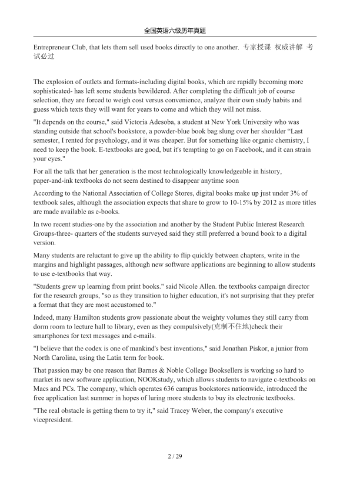
全国英语六级历年真题
2 / 29
Entrepreneur Club, that lets them sell used books directly to one another. 专家授课权威讲解考
试必过
The explosion of outlets and formats-including digital books, which are rapidly becoming more
sophisticated- has left some students bewildered. After completing the difficult job of course
selection, they are forced to weigh cost versus convenience, analyze their own study habits and
guess which texts they will want for years to come and which they will not miss.
"It depends on the course," said Victoria Adesoba, a student at New York University who was
standing outside that school's bookstore, a powder-blue book bag slung over her shoulder “Last
semester, I rented for psychology, and it was cheaper. But for something like organic chemistry, I
need to keep the book. E-textbooks are good, but it's tempting to go on Facebook, and it can strain
your eyes."
For all the talk that her generation is the most technologically knowledgeable in history,
paper-and-ink textbooks do not seem destined to disappear anytime soon
According to the National Association of College Stores, digital books make up just under 3% of
textbook sales, although the association expects that share to grow to 10-15% by 2012 as more titles
are made available as e-books.
In two recent studies-one by the association and another by the Student Public Interest Research
Groups-three- quarters of the students surveyed said they still preferred a bound book to a digital
version.
Many students are reluctant to give up the ability to flip quickly between chapters, write in the
margins and highlight passages, although new software applications are beginning to allow students
to use e-textbooks that way.
"Students grew up learning from print books." said Nicole Allen. the textbooks campaign director
for the research groups, "so as they transition to higher education, it's not surprising that they prefer
a format that they are most accustomed to."
Indeed, many Hamilton students grow passionate about the weighty volumes they still carry from
dorm room to lecture hall to library, even as they compulsively(克制不住地)check their
smartphones for text messages and c-mails.
"I believe that the codex is one of mankind's best inventions," said Jonathan Piskor, a junior from
North Carolina, using the Latin term for book.
That passion may be one reason that Barnes & Noble College Booksellers is working so hard to
market its new software application, NOOKstudy, which allows students to navigate c-textbooks on
Macs and PCs. The company, which operates 636 campus bookstores nationwide, introduced the
free application last summer in hopes of luring more students to buy its electronic textbooks.
"The real obstacle is getting them to try it," said Tracey Weber, the company's executive
vicepresident.
查看 / 复制本页文字
全国英语六级历年真题 2 / 29 Entrepreneur Club, that lets them sell used books directly to one another. 专家授课权威讲解考 试必过 The explosion of outlets and formats-including digital books, which are rapidly becoming more sophisticated- has left some students bewildered. After completing the difficult job of course selection, they are forced to weigh cost versus convenience, analyze their own study habits and guess which texts they will want for years to come and which they will not miss. "It depends on the course," said Victoria Adesoba, a student at New York University who was standing outside that school's bookstore, a powder-blue book bag slung over her shoulder “Last semester, I rented for psychology, and it was cheaper. But for something like organic chemistry, I need to keep the book. E-textbooks are good, but it's tempting to go on Facebook, and it can strain your eyes." For all the talk that her generation is the most technologically knowledgeable in history, paper-and-ink textbooks do not seem destined to disappear anytime soon According to the National Association of College Stores, digital books make up just under 3% of textbook sales, although the association expects that share to grow to 10-15% by 2012 as more titles are made available as e-books. In two recent studies-one by the association and another by the Student Public Interest Research Groups-three- quarters of the students surveyed said they still preferred a bound book to a digital version. Many students are reluctant to give up the ability to flip quickly between chapters, write in the margins and highlight passages, although new software applications are beginning to allow students to use e-textbooks that way. "Students grew up learning from print books." said Nicole Allen. the textbooks campaign director for the research groups, "so as they transition to higher education, it's not surprising that they prefer a format that they are most accustomed to." Indeed, many Hamilton students grow passionate about the weighty volumes they still carry from dorm room to lecture hall to library, even as they compulsively(克制不住地)check their smartphones for text messages and c-mails. "I believe that the codex is one of mankind's best inventions," said Jonathan Piskor, a junior from North Carolina, using the Latin term for book. That passion may be one reason that Barnes & Noble College Booksellers is working so hard to market its new software application, NOOKstudy, which allows students to navigate c-textbooks on Macs and PCs. The company, which operates 636 campus bookstores nationwide, introduced the free application last summer in hopes of luring more students to buy its electronic textbooks. "The real obstacle is getting them to try it," said Tracey Weber, the company's executive vicepresident.
第 3 / 29 页
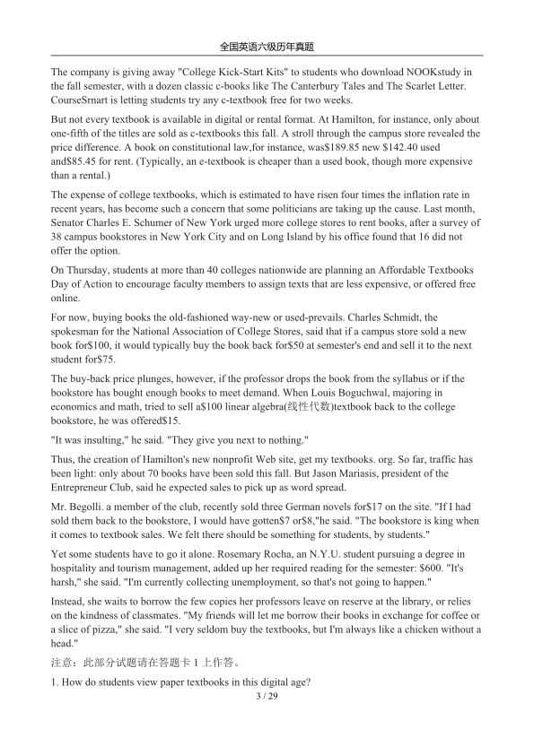
全国英语六级历年真题
3 / 29
The company is giving away "College Kick-Start Kits" to students who download NOOKstudy in
the fall semester, with a dozen classic c-books like The Canterbury Tales and The Scarlet Letter.
CourseSrnart is letting students try any c-textbook free for two weeks.
But not every textbook is available in digital or rental format. At Hamilton, for instance, only about
one-fifth of the titles are sold as c-textbooks this fall. A stroll through the campus store revealed the
price difference. A book on constitutional law,for instance, was$189.85 new $142.40 used
and$85.45 for rent. (Typically, an e-textbook is cheaper than a used book, though more expensive
than a rental.)
The expense of college textbooks, which is estimated to have risen four times the inflation rate in
recent years, has become such a concern that some politicians are taking up the cause. Last month,
Senator Charles E. Schumer of New York urged more college stores to rent books, after a survey of
38 campus bookstores in New York City and on Long Island by his office found that 16 did not
offer the option.
On Thursday, students at more than 40 colleges nationwide are planning an Affordable Textbooks
Day of Action to encourage faculty members to assign texts that are less expensive, or offered free
online.
For now, buying books the old-fashioned way-new or used-prevails. Charles Schmidt, the
spokesman for the National Association of College Stores, said that if a campus store sold a new
book for$100, it would typically buy the book back for$50 at semester's end and sell it to the next
student for$75.
The buy-back price plunges, however, if the professor drops the book from the syllabus or if the
bookstore has bought enough books to meet demand. When Louis Boguchwal, majoring in
economics and math, tried to sell a$100 linear algebra(线性代数)textbook back to the college
bookstore, he was offered$15.
"It was insulting," he said. "They give you next to nothing."
Thus, the creation of Hamilton's new nonprofit Web site, get my textbooks. org. So far, traffic has
been light: only about 70 books have been sold this fall. But Jason Mariasis, president of the
Entrepreneur Club, said he expected sales to pick up as word spread.
Mr. Begolli. a member of the club, recently sold three German novels for$17 on the site. "If I had
sold them back to the bookstore, I would have gotten$7 or$8,"he said. "The bookstore is king when
it comes to textbook sales. We felt there should be something for students, by students."
Yet some students have to go it alone. Rosemary Rocha, an N.Y.U. student pursuing a degree in
hospitality and tourism management, added up her required reading for the semester: $600. "It's
harsh," she said. "I'm currently collecting unemployment, so that's not going to happen."
Instead, she waits to borrow the few copies her professors leave on reserve at the library, or relies
on the kindness of classmates. "My friends will let me borrow their books in exchange for coffee or
a slice of pizza," she said. "I very seldom buy the textbooks, but I'm always like a chicken without a
head."
注意：此部分试题请在答题卡1 上作答。
1. How do students view paper textbooks in this digital age?
查看 / 复制本页文字
全国英语六级历年真题 3 / 29 The company is giving away "College Kick-Start Kits" to students who download NOOKstudy in the fall semester, with a dozen classic c-books like The Canterbury Tales and The Scarlet Letter. CourseSrnart is letting students try any c-textbook free for two weeks. But not every textbook is available in digital or rental format. At Hamilton, for instance, only about one-fifth of the titles are sold as c-textbooks this fall. A stroll through the campus store revealed the price difference. A book on constitutional law,for instance, was$189.85 new $142.40 used and$85.45 for rent. (Typically, an e-textbook is cheaper than a used book, though more expensive than a rental.) The expense of college textbooks, which is estimated to have risen four times the inflation rate in recent years, has become such a concern that some politicians are taking up the cause. Last month, Senator Charles E. Schumer of New York urged more college stores to rent books, after a survey of 38 campus bookstores in New York City and on Long Island by his office found that 16 did not offer the option. On Thursday, students at more than 40 colleges nationwide are planning an Affordable Textbooks Day of Action to encourage faculty members to assign texts that are less expensive, or offered free online. For now, buying books the old-fashioned way-new or used-prevails. Charles Schmidt, the spokesman for the National Association of College Stores, said that if a campus store sold a new book for$100, it would typically buy the book back for$50 at semester's end and sell it to the next student for$75. The buy-back price plunges, however, if the professor drops the book from the syllabus or if the bookstore has bought enough books to meet demand. When Louis Boguchwal, majoring in economics and math, tried to sell a$100 linear algebra(线性代数)textbook back to the college bookstore, he was offered$15. "It was insulting," he said. "They give you next to nothing." Thus, the creation of Hamilton's new nonprofit Web site, get my textbooks. org. So far, traffic has been light: only about 70 books have been sold this fall. But Jason Mariasis, president of the Entrepreneur Club, said he expected sales to pick up as word spread. Mr. Begolli. a member of the club, recently sold three German novels for$17 on the site. "If I had sold them back to the bookstore, I would have gotten$7 or$8,"he said. "The bookstore is king when it comes to textbook sales. We felt there should be something for students, by students." Yet some students have to go it alone. Rosemary Rocha, an N.Y.U. student pursuing a degree in hospitality and tourism management, added up her required reading for the semester: $600. "It's harsh," she said. "I'm currently collecting unemployment, so that's not going to happen." Instead, she waits to borrow the few copies her professors leave on reserve at the library, or relies on the kindness of classmates. "My friends will let me borrow their books in exchange for coffee or a slice of pizza," she said. "I very seldom buy the textbooks, but I'm always like a chicken without a head." 注意：此部分试题请在答题卡1 上作答。 1. How do students view paper textbooks in this digital age?
第 4 / 29 页
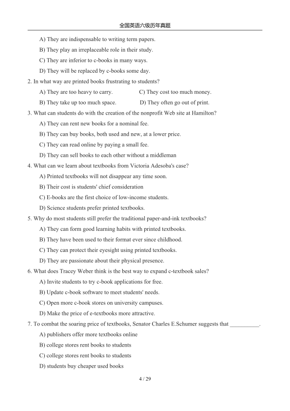
全国英语六级历年真题
4 / 29
A) They are indispensable to writing term papers.
B) They play an irreplaceable role in their study.
C) They are inferior to c-books in many ways.
D) They will be replaced by c-books some day.
2. In what way are printed books frustrating to students?
A) They are too heavy to carry.
C) They cost too much money.
B) They take up too much space.
D) They often go out of print.
3. What can students do with the creation of the nonprofit Web site at Hamilton?
A) They can rent new books for a nominal fee.
B) They can buy books, both used and new, at a lower price.
C) They can read online by paying a small fee.
D) They can sell books to each other without a middleman
4. What can we learn about textbooks from Victoria Adesoba's case?
A) Printed textbooks will not disappear any time soon.
B) Their cost is students' chief consideration
C) E-books are the first choice of low-income students.
D) Science students prefer printed textbooks.
5. Why do most students still prefer the traditional paper-and-ink textbooks?
A) They can form good learning habits with printed textbooks.
B) They have been used to their format ever since childhood.
C) They can protect their eyesight using printed textbooks.
D) They are passionate about their physical presence.
6. What does Tracey Weber think is the best way to expand c-textbook sales?
A) Invite students to try c-book applications for free.
B) Update c-book software to meet students' needs.
C) Open more c-book stores on university campuses.
D) Make the price of e-textbooks more attractive.
7. To combat the soaring price of textbooks, Senator Charles E.Schumer suggests that __________.
A) publishers offer more textbooks online
B) college stores rent books to students
C) college stores rent books to students
D) students buy cheaper used books
查看 / 复制本页文字
全国英语六级历年真题 4 / 29 A) They are indispensable to writing term papers. B) They play an irreplaceable role in their study. C) They are inferior to c-books in many ways. D) They will be replaced by c-books some day. 2. In what way are printed books frustrating to students? A) They are too heavy to carry. C) They cost too much money. B) They take up too much space. D) They often go out of print. 3. What can students do with the creation of the nonprofit Web site at Hamilton? A) They can rent new books for a nominal fee. B) They can buy books, both used and new, at a lower price. C) They can read online by paying a small fee. D) They can sell books to each other without a middleman 4. What can we learn about textbooks from Victoria Adesoba's case? A) Printed textbooks will not disappear any time soon. B) Their cost is students' chief consideration C) E-books are the first choice of low-income students. D) Science students prefer printed textbooks. 5. Why do most students still prefer the traditional paper-and-ink textbooks? A) They can form good learning habits with printed textbooks. B) They have been used to their format ever since childhood. C) They can protect their eyesight using printed textbooks. D) They are passionate about their physical presence. 6. What does Tracey Weber think is the best way to expand c-textbook sales? A) Invite students to try c-book applications for free. B) Update c-book software to meet students' needs. C) Open more c-book stores on university campuses. D) Make the price of e-textbooks more attractive. 7. To combat the soaring price of textbooks, Senator Charles E.Schumer suggests that __________. A) publishers offer more textbooks online B) college stores rent books to students C) college stores rent books to students D) students buy cheaper used books
第 5 / 29 页
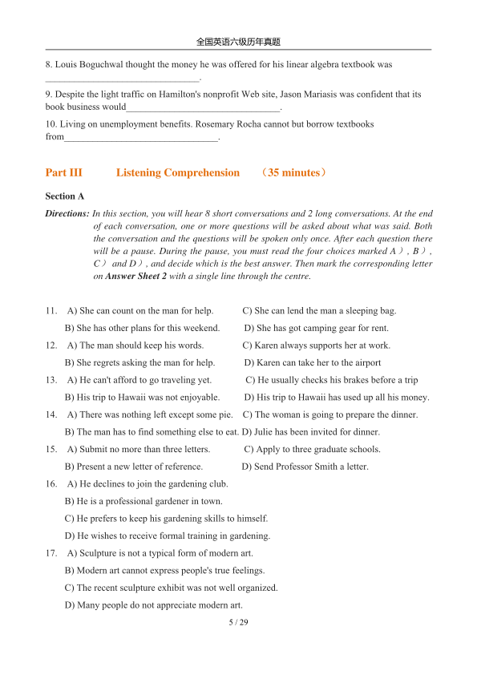
全国英语六级历年真题
5 / 29
8. Louis Boguchwal thought the money he was offered for his linear algebra textbook was
________________________________.
9. Despite the light traffic on Hamilton's nonprofit Web site, Jason Mariasis was confident that its
book business would________________________________.
10. Living on unemployment benefits. Rosemary Rocha cannot but borrow textbooks
from________________________________.
Part III
Listening Comprehension
（35 minutes）
Section A
Directions: In this section, you will hear 8 short conversations and 2 long conversations. At the end
of each conversation, one or more questions will be asked about what was said. Both
the conversation and the questions will be spoken only once. After each question there
will be a pause. During the pause, you must read the four choices marked A）, B）,
C）and D）, and decide which is the best answer. Then mark the corresponding letter
on Answer Sheet 2 with a single line through the centre.
11.
A) She can count on the man for help.
C) She can lend the man a sleeping bag.
B) She has other plans for this weekend.
D) She has got camping gear for rent.
12.
A) The man should keep his words.
C) Karen always supports her at work.
B) She regrets asking the man for help.
D) Karen can take her to the airport
13.
A) He can't afford to go traveling yet.
C) He usually checks his brakes before a trip
B) His trip to Hawaii was not enjoyable.
D) His trip to Hawaii has used up all his money.
14.
A) There was nothing left except some pie.
C) The woman is going to prepare the dinner.
B) The man has to find something else to eat. D) Julie has been invited for dinner.
15.
A) Submit no more than three letters.
C) Apply to three graduate schools.
B) Present a new letter of reference.
D) Send Professor Smith a letter.
16.
A) He declines to join the gardening club.
B) He is a professional gardener in town.
C) He prefers to keep his gardening skills to himself.
D) He wishes to receive formal training in gardening.
17.
A) Sculpture is not a typical form of modern art.
B) Modern art cannot express people's true feelings.
C) The recent sculpture exhibit was not well organized.
D) Many people do not appreciate modern art.
查看 / 复制本页文字
全国英语六级历年真题 5 / 29 8. Louis Boguchwal thought the money he was offered for his linear algebra textbook was ________________________________. 9. Despite the light traffic on Hamilton's nonprofit Web site, Jason Mariasis was confident that its book business would________________________________. 10. Living on unemployment benefits. Rosemary Rocha cannot but borrow textbooks from________________________________. Part III Listening Comprehension （35 minutes） Section A Directions: In this section, you will hear 8 short conversations and 2 long conversations. At the end of each conversation, one or more questions will be asked about what was said. Both the conversation and the questions will be spoken only once. After each question there will be a pause. During the pause, you must read the four choices marked A）, B）, C）and D）, and decide which is the best answer. Then mark the corresponding letter on Answer Sheet 2 with a single line through the centre. 11. A) She can count on the man for help. C) She can lend the man a sleeping bag. B) She has other plans for this weekend. D) She has got camping gear for rent. 12. A) The man should keep his words. C) Karen always supports her at work. B) She regrets asking the man for help. D) Karen can take her to the airport 13. A) He can't afford to go traveling yet. C) He usually checks his brakes before a trip B) His trip to Hawaii was not enjoyable. D) His trip to Hawaii has used up all his money. 14. A) There was nothing left except some pie. C) The woman is going to prepare the dinner. B) The man has to find something else to eat. D) Julie has been invited for dinner. 15. A) Submit no more than three letters. C) Apply to three graduate schools. B) Present a new letter of reference. D) Send Professor Smith a letter. 16. A) He declines to join the gardening club. B) He is a professional gardener in town. C) He prefers to keep his gardening skills to himself. D) He wishes to receive formal training in gardening. 17. A) Sculpture is not a typical form of modern art. B) Modern art cannot express people's true feelings. C) The recent sculpture exhibit was not well organized. D) Many people do not appreciate modern art.
第 6 / 29 页
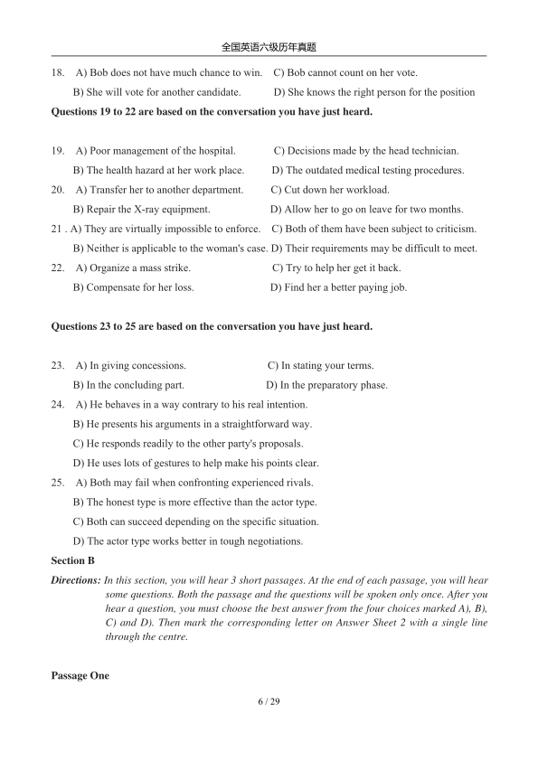
全国英语六级历年真题
6 / 29
18.
A) Bob does not have much chance to win.
C) Bob cannot count on her vote.
B) She will vote for another candidate.
D) She knows the right person for the position
Questions 19 to 22 are based on the conversation you have just heard.
19.
A) Poor management of the hospital.
C) Decisions made by the head technician.
B) The health hazard at her work place.
D) The outdated medical testing procedures.
20.
A) Transfer her to another department.
C) Cut down her workload.
B) Repair the X-ray equipment.
D) Allow her to go on leave for two months.
21 . A) They are virtually impossible to enforce.
C) Both of them have been subject to criticism.
B) Neither is applicable to the woman's case. D) Their requirements may be difficult to meet.
22.
A) Organize a mass strike.
C) Try to help her get it back.
B) Compensate for her loss.
D) Find her a better paying job.
Questions 23 to 25 are based on the conversation you have just heard.
23.
A) In giving concessions.
C) In stating your terms.
B) In the concluding part.
D) In the preparatory phase.
24.
A) He behaves in a way contrary to his real intention.
B) He presents his arguments in a straightforward way.
C) He responds readily to the other party's proposals.
D) He uses lots of gestures to help make his points clear.
25.
A) Both may fail when confronting experienced rivals.
B) The honest type is more effective than the actor type.
C) Both can succeed depending on the specific situation.
D) The actor type works better in tough negotiations.
Section B
Directions: In this section, you will hear 3 short passages. At the end of each passage, you will hear
some questions. Both the passage and the questions will be spoken only once. After you
hear a question, you must choose the best answer from the four choices marked A), B),
C) and D). Then mark the corresponding letter on Answer Sheet 2 with a single line
through the centre.
Passage One
查看 / 复制本页文字
全国英语六级历年真题 6 / 29 18. A) Bob does not have much chance to win. C) Bob cannot count on her vote. B) She will vote for another candidate. D) She knows the right person for the position Questions 19 to 22 are based on the conversation you have just heard. 19. A) Poor management of the hospital. C) Decisions made by the head technician. B) The health hazard at her work place. D) The outdated medical testing procedures. 20. A) Transfer her to another department. C) Cut down her workload. B) Repair the X-ray equipment. D) Allow her to go on leave for two months. 21 . A) They are virtually impossible to enforce. C) Both of them have been subject to criticism. B) Neither is applicable to the woman's case. D) Their requirements may be difficult to meet. 22. A) Organize a mass strike. C) Try to help her get it back. B) Compensate for her loss. D) Find her a better paying job. Questions 23 to 25 are based on the conversation you have just heard. 23. A) In giving concessions. C) In stating your terms. B) In the concluding part. D) In the preparatory phase. 24. A) He behaves in a way contrary to his real intention. B) He presents his arguments in a straightforward way. C) He responds readily to the other party's proposals. D) He uses lots of gestures to help make his points clear. 25. A) Both may fail when confronting experienced rivals. B) The honest type is more effective than the actor type. C) Both can succeed depending on the specific situation. D) The actor type works better in tough negotiations. Section B Directions: In this section, you will hear 3 short passages. At the end of each passage, you will hear some questions. Both the passage and the questions will be spoken only once. After you hear a question, you must choose the best answer from the four choices marked A), B), C) and D). Then mark the corresponding letter on Answer Sheet 2 with a single line through the centre. Passage One
第 7 / 29 页
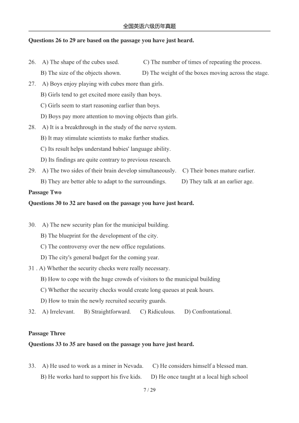
全国英语六级历年真题
7 / 29
Questions 26 to 29 are based on the passage you have just heard.
26.
A) The shape of the cubes used.
C) The number of times of repeating the process.
B) The size of the objects shown.
D) The weight of the boxes moving across the stage.
27.
A) Boys enjoy playing with cubes more than girls.
B) Girls tend to get excited more easily than boys.
C) Girls seem to start reasoning earlier than boys.
D) Boys pay more attention to moving objects than girls.
28.
A) It is a breakthrough in the study of the nerve system.
B) It may stimulate scientists to make further studies.
C) Its result helps understand babies' language ability.
D) Its findings are quite contrary to previous research.
29.
A) The two sides of their brain develop simultaneously.
C) Their bones mature earlier.
B) They are better able to adapt to the surroundings.
D) They talk at an earlier age.
Passage Two
Questions 30 to 32 are based on the passage you have just heard.
30.
A) The new security plan for the municipal building.
B) The blueprint for the development of the city.
C) The controversy over the new office regulations.
D) The city's general budget for the coming year.
31 . A) Whether the security checks were really necessary.
B) How to cope with the huge crowds of visitors to the municipal building
C) Whether the security checks would create long queues at peak hours.
D) How to train the newly recruited security guards.
32.
A) Irrelevant.
B) Straightforward.
C) Ridiculous.
D) Confrontational.
Passage Three
Questions 33 to 35 are based on the passage you have just heard.
33.
A) He used to work as a miner in Nevada.
C) He considers himself a blessed man.
B) He works hard to support his five kids.
D) He once taught at a local high school
查看 / 复制本页文字
全国英语六级历年真题 7 / 29 Questions 26 to 29 are based on the passage you have just heard. 26. A) The shape of the cubes used. C) The number of times of repeating the process. B) The size of the objects shown. D) The weight of the boxes moving across the stage. 27. A) Boys enjoy playing with cubes more than girls. B) Girls tend to get excited more easily than boys. C) Girls seem to start reasoning earlier than boys. D) Boys pay more attention to moving objects than girls. 28. A) It is a breakthrough in the study of the nerve system. B) It may stimulate scientists to make further studies. C) Its result helps understand babies' language ability. D) Its findings are quite contrary to previous research. 29. A) The two sides of their brain develop simultaneously. C) Their bones mature earlier. B) They are better able to adapt to the surroundings. D) They talk at an earlier age. Passage Two Questions 30 to 32 are based on the passage you have just heard. 30. A) The new security plan for the municipal building. B) The blueprint for the development of the city. C) The controversy over the new office regulations. D) The city's general budget for the coming year. 31 . A) Whether the security checks were really necessary. B) How to cope with the huge crowds of visitors to the municipal building C) Whether the security checks would create long queues at peak hours. D) How to train the newly recruited security guards. 32. A) Irrelevant. B) Straightforward. C) Ridiculous. D) Confrontational. Passage Three Questions 33 to 35 are based on the passage you have just heard. 33. A) He used to work as a miner in Nevada. C) He considers himself a blessed man. B) He works hard to support his five kids. D) He once taught at a local high school
第 8 / 29 页
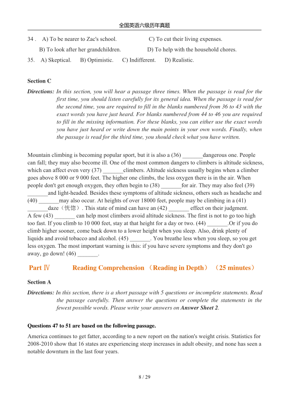
全国英语六级历年真题
8 / 29
34 .
A) To be nearer to Zac's school.
C) To cut their living expenses.
B) To look after her grandchildren.
D) To help with the household chores.
35.
A) Skeptical.
B) Optimistic.
C) Indifferent.
D) Realistic.
Section C
Directions: In this section, you will hear a passage three times. When the passage is read for the
first time, you should listen carefully for its general idea. When the passage is read for
the second time, you are required to fill in the blanks numbered from 36 to 43 with the
exact words you have just heard. For blanks numbered from 44 to 46 you are required
to fill in the missing information. For these blanks, you can either use the exact words
you have just heard or write down the main points in your own words. Finally, when
the passage is read for the third time, you should check what you have written.
Mountain climbing is becoming popular sport, but it is also a (36) _______dangerous one. People
can fall; they may also become ill. One of the most common dangers to climbers is altitude sickness,
which can affect even very (37) _______climbers. Altitude sickness usually begins when a climber
goes above 8 000 or 9 000 feet. The higher one climbs, the less oxygen there is in the air. When
people don't get enough oxygen, they often begin to (38) _______for air. They may also feel (39)
_______and light-headed. Besides these symptoms of altitude sickness, others such as headache and
(40) _______may also occur. At heights of over 18000 feet, people may be climbing in a (41)
_______daze（恍惚）. This state of mind can have an (42) _______ effect on their judgment.
A few (43) _______ can help most climbers avoid altitude sickness. The first is not to go too high
too fast. If you climb to 10 000 feet, stay at that height for a day or two. (44) _______.Or if you do
climb higher sooner, come back down to a lower height when you sleep. Also, drink plenty of
liquids and avoid tobacco and alcohol. (45) _______. You breathe less when you sleep, so you get
less oxygen. The most important warning is this: if you have severe symptoms and they don't go
away, go down! (46) _______.
Part Ⅳ
Reading Comprehension （Reading in Depth）（25 minutes）
Section A
Directions: In this section, there is a short passage with 5 questions or incomplete statements. Read
the passage carefully. Then answer the questions or complete the statements in the
fewest possible words. Please write your answers on Answer Sheet 2.
Questions 47 to 51 are based on the following passage.
America continues to get fatter, according to a new report on the nation's weight crisis. Statistics for
2008-2010 show that 16 states are experiencing steep increases in adult obesity, and none has seen a
notable downturn in the last four years.
查看 / 复制本页文字
全国英语六级历年真题 8 / 29 34 . A) To be nearer to Zac's school. C) To cut their living expenses. B) To look after her grandchildren. D) To help with the household chores. 35. A) Skeptical. B) Optimistic. C) Indifferent. D) Realistic. Section C Directions: In this section, you will hear a passage three times. When the passage is read for the first time, you should listen carefully for its general idea. When the passage is read for the second time, you are required to fill in the blanks numbered from 36 to 43 with the exact words you have just heard. For blanks numbered from 44 to 46 you are required to fill in the missing information. For these blanks, you can either use the exact words you have just heard or write down the main points in your own words. Finally, when the passage is read for the third time, you should check what you have written. Mountain climbing is becoming popular sport, but it is also a (36) _______dangerous one. People can fall; they may also become ill. One of the most common dangers to climbers is altitude sickness, which can affect even very (37) _______climbers. Altitude sickness usually begins when a climber goes above 8 000 or 9 000 feet. The higher one climbs, the less oxygen there is in the air. When people don't get enough oxygen, they often begin to (38) _______for air. They may also feel (39) _______and light-headed. Besides these symptoms of altitude sickness, others such as headache and (40) _______may also occur. At heights of over 18000 feet, people may be climbing in a (41) _______daze（恍惚）. This state of mind can have an (42) _______ effect on their judgment. A few (43) _______ can help most climbers avoid altitude sickness. The first is not to go too high too fast. If you climb to 10 000 feet, stay at that height for a day or two. (44) _______.Or if you do climb higher sooner, come back down to a lower height when you sleep. Also, drink plenty of liquids and avoid tobacco and alcohol. (45) _______. You breathe less when you sleep, so you get less oxygen. The most important warning is this: if you have severe symptoms and they don't go away, go down! (46) _______. Part Ⅳ Reading Comprehension （Reading in Depth）（25 minutes） Section A Directions: In this section, there is a short passage with 5 questions or incomplete statements. Read the passage carefully. Then answer the questions or complete the statements in the fewest possible words. Please write your answers on Answer Sheet 2. Questions 47 to 51 are based on the following passage. America continues to get fatter, according to a new report on the nation's weight crisis. Statistics for 2008-2010 show that 16 states are experiencing steep increases in adult obesity, and none has seen a notable downturn in the last four years.
第 9 / 29 页
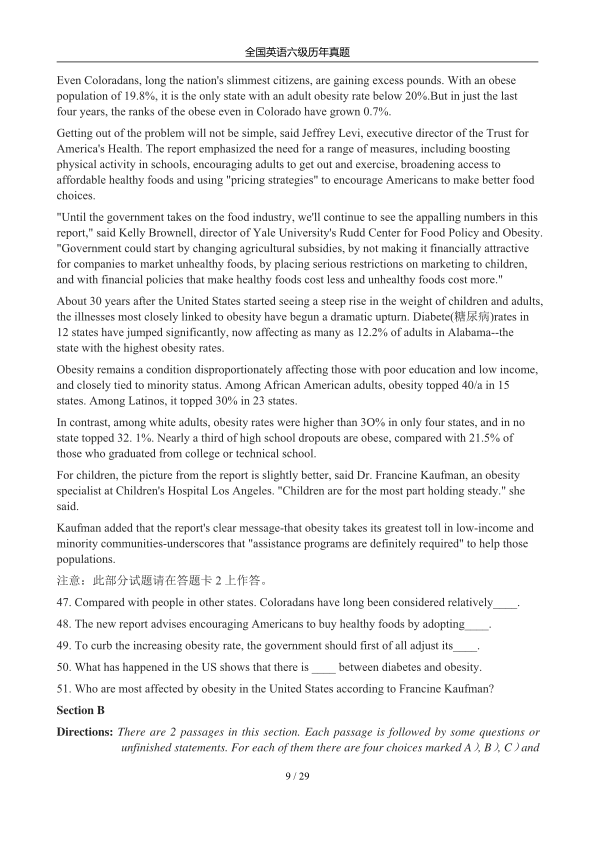
全国英语六级历年真题
9 / 29
Even Coloradans, long the nation's slimmest citizens, are gaining excess pounds. With an obese
population of 19.8%, it is the only state with an adult obesity rate below 20%.But in just the last
four years, the ranks of the obese even in Colorado have grown 0.7%.
Getting out of the problem will not be simple, said Jeffrey Levi, executive director of the Trust for
America's Health. The report emphasized the need for a range of measures, including boosting
physical activity in schools, encouraging adults to get out and exercise, broadening access to
affordable healthy foods and using "pricing strategies" to encourage Americans to make better food
choices.
"Until the government takes on the food industry, we'll continue to see the appalling numbers in this
report," said Kelly Brownell, director of Yale University's Rudd Center for Food Policy and Obesity.
"Government could start by changing agricultural subsidies, by not making it financially attractive
for companies to market unhealthy foods, by placing serious restrictions on marketing to children,
and with financial policies that make healthy foods cost less and unhealthy foods cost more."
About 30 years after the United States started seeing a steep rise in the weight of children and adults,
the illnesses most closely linked to obesity have begun a dramatic upturn. Diabete(糖尿病)rates in
12 states have jumped significantly, now affecting as many as 12.2% of adults in Alabama--the
state with the highest obesity rates.
Obesity remains a condition disproportionately affecting those with poor education and low income,
and closely tied to minority status. Among African American adults, obesity topped 40/a in 15
states. Among Latinos, it topped 30% in 23 states.
In contrast, among white adults, obesity rates were higher than 3O% in only four states, and in no
state topped 32. 1%. Nearly a third of high school dropouts are obese, compared with 21.5% of
those who graduated from college or technical school.
For children, the picture from the report is slightly better, said Dr. Francine Kaufman, an obesity
specialist at Children's Hospital Los Angeles. "Children are for the most part holding steady." she
said.
Kaufman added that the report's clear message-that obesity takes its greatest toll in low-income and
minority communities-underscores that "assistance programs are definitely required" to help those
populations.
注意：此部分试题请在答题卡2 上作答。
47. Compared with people in other states. Coloradans have long been considered relatively____.
48. The new report advises encouraging Americans to buy healthy foods by adopting____.
49. To curb the increasing obesity rate, the government should first of all adjust its____.
50. What has happened in the US shows that there is ____ between diabetes and obesity.
51. Who are most affected by obesity in the United States according to Francine Kaufman?
Section B
Directions: There are 2 passages in this section. Each passage is followed by some questions or
unfinished statements. For each of them there are four choices marked A）, B）, C）and
查看 / 复制本页文字
全国英语六级历年真题 9 / 29 Even Coloradans, long the nation's slimmest citizens, are gaining excess pounds. With an obese population of 19.8%, it is the only state with an adult obesity rate below 20%.But in just the last four years, the ranks of the obese even in Colorado have grown 0.7%. Getting out of the problem will not be simple, said Jeffrey Levi, executive director of the Trust for America's Health. The report emphasized the need for a range of measures, including boosting physical activity in schools, encouraging adults to get out and exercise, broadening access to affordable healthy foods and using "pricing strategies" to encourage Americans to make better food choices. "Until the government takes on the food industry, we'll continue to see the appalling numbers in this report," said Kelly Brownell, director of Yale University's Rudd Center for Food Policy and Obesity. "Government could start by changing agricultural subsidies, by not making it financially attractive for companies to market unhealthy foods, by placing serious restrictions on marketing to children, and with financial policies that make healthy foods cost less and unhealthy foods cost more." About 30 years after the United States started seeing a steep rise in the weight of children and adults, the illnesses most closely linked to obesity have begun a dramatic upturn. Diabete(糖尿病)rates in 12 states have jumped significantly, now affecting as many as 12.2% of adults in Alabama--the state with the highest obesity rates. Obesity remains a condition disproportionately affecting those with poor education and low income, and closely tied to minority status. Among African American adults, obesity topped 40/a in 15 states. Among Latinos, it topped 30% in 23 states. In contrast, among white adults, obesity rates were higher than 3O% in only four states, and in no state topped 32. 1%. Nearly a third of high school dropouts are obese, compared with 21.5% of those who graduated from college or technical school. For children, the picture from the report is slightly better, said Dr. Francine Kaufman, an obesity specialist at Children's Hospital Los Angeles. "Children are for the most part holding steady." she said. Kaufman added that the report's clear message-that obesity takes its greatest toll in low-income and minority communities-underscores that "assistance programs are definitely required" to help those populations. 注意：此部分试题请在答题卡2 上作答。 47. Compared with people in other states. Coloradans have long been considered relatively____. 48. The new report advises encouraging Americans to buy healthy foods by adopting____. 49. To curb the increasing obesity rate, the government should first of all adjust its____. 50. What has happened in the US shows that there is ____ between diabetes and obesity. 51. Who are most affected by obesity in the United States according to Francine Kaufman? Section B Directions: There are 2 passages in this section. Each passage is followed by some questions or unfinished statements. For each of them there are four choices marked A）, B）, C）and
第 10 / 29 页
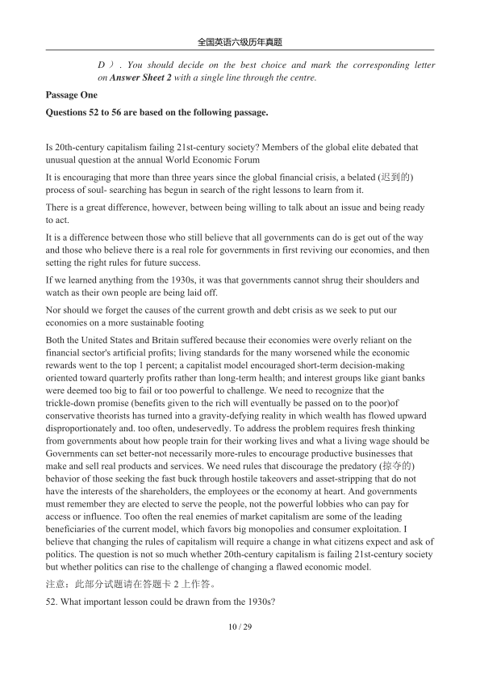
全国英语六级历年真题
10 / 29
D ）. You should decide on the best choice and mark the corresponding letter
on Answer Sheet 2 with a single line through the centre.
Passage One
Questions 52 to 56 are based on the following passage.
Is 20th-century capitalism failing 21st-century society? Members of the global elite debated that
unusual question at the annual World Economic Forum
It is encouraging that more than three years since the global financial crisis, a belated (迟到的)
process of soul- searching has begun in search of the right lessons to learn from it.
There is a great difference, however, between being willing to talk about an issue and being ready
to act.
It is a difference between those who still believe that all governments can do is get out of the way
and those who believe there is a real role for governments in first reviving our economies, and then
setting the right rules for future success.
If we learned anything from the 1930s, it was that governments cannot shrug their shoulders and
watch as their own people are being laid off.
Nor should we forget the causes of the current growth and debt crisis as we seek to put our
economies on a more sustainable footing
Both the United States and Britain suffered because their economies were overly reliant on the
financial sector's artificial profits; living standards for the many worsened while the economic
rewards went to the top 1 percent; a capitalist model encouraged short-term decision-making
oriented toward quarterly profits rather than long-term health; and interest groups like giant banks
were deemed too big to fail or too powerful to challenge. We need to recognize that the
trickle-down promise (benefits given to the rich will eventually be passed on to the poor)of
conservative theorists has turned into a gravity-defying reality in which wealth has flowed upward
disproportionately and. too often, undeservedly. To address the problem requires fresh thinking
from governments about how people train for their working lives and what a living wage should be
Governments can set better-not necessarily more-rules to encourage productive businesses that
make and sell real products and services. We need rules that discourage the predatory (掠夺的)
behavior of those seeking the fast buck through hostile takeovers and asset-stripping that do not
have the interests of the shareholders, the employees or the economy at heart. And governments
must remember they are elected to serve the people, not the powerful lobbies who can pay for
access or influence. Too often the real enemies of market capitalism are some of the leading
beneficiaries of the current model, which favors big monopolies and consumer exploitation. I
believe that changing the rules of capitalism will require a change in what citizens expect and ask of
politics. The question is not so much whether 20th-century capitalism is failing 21st-century society
but whether politics can rise to the challenge of changing a flawed economic model.
注意：此部分试题请在答题卡2 上作答。
52. What important lesson could be drawn from the 1930s?
查看 / 复制本页文字
全国英语六级历年真题 10 / 29 D ）. You should decide on the best choice and mark the corresponding letter on Answer Sheet 2 with a single line through the centre. Passage One Questions 52 to 56 are based on the following passage. Is 20th-century capitalism failing 21st-century society? Members of the global elite debated that unusual question at the annual World Economic Forum It is encouraging that more than three years since the global financial crisis, a belated (迟到的) process of soul- searching has begun in search of the right lessons to learn from it. There is a great difference, however, between being willing to talk about an issue and being ready to act. It is a difference between those who still believe that all governments can do is get out of the way and those who believe there is a real role for governments in first reviving our economies, and then setting the right rules for future success. If we learned anything from the 1930s, it was that governments cannot shrug their shoulders and watch as their own people are being laid off. Nor should we forget the causes of the current growth and debt crisis as we seek to put our economies on a more sustainable footing Both the United States and Britain suffered because their economies were overly reliant on the financial sector's artificial profits; living standards for the many worsened while the economic rewards went to the top 1 percent; a capitalist model encouraged short-term decision-making oriented toward quarterly profits rather than long-term health; and interest groups like giant banks were deemed too big to fail or too powerful to challenge. We need to recognize that the trickle-down promise (benefits given to the rich will eventually be passed on to the poor)of conservative theorists has turned into a gravity-defying reality in which wealth has flowed upward disproportionately and. too often, undeservedly. To address the problem requires fresh thinking from governments about how people train for their working lives and what a living wage should be Governments can set better-not necessarily more-rules to encourage productive businesses that make and sell real products and services. We need rules that discourage the predatory (掠夺的) behavior of those seeking the fast buck through hostile takeovers and asset-stripping that do not have the interests of the shareholders, the employees or the economy at heart. And governments must remember they are elected to serve the people, not the powerful lobbies who can pay for access or influence. Too often the real enemies of market capitalism are some of the leading beneficiaries of the current model, which favors big monopolies and consumer exploitation. I believe that changing the rules of capitalism will require a change in what citizens expect and ask of politics. The question is not so much whether 20th-century capitalism is failing 21st-century society but whether politics can rise to the challenge of changing a flawed economic model. 注意：此部分试题请在答题卡2 上作答。 52. What important lesson could be drawn from the 1930s?
第 11 / 29 页
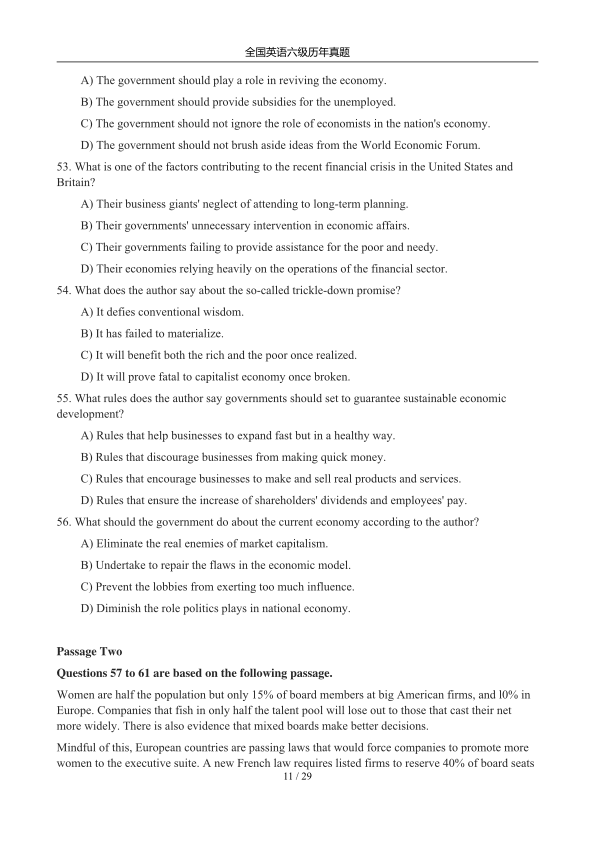
全国英语六级历年真题
11 / 29
A) The government should play a role in reviving the economy.
B) The government should provide subsidies for the unemployed.
C) The government should not ignore the role of economists in the nation's economy.
D) The government should not brush aside ideas from the World Economic Forum.
53. What is one of the factors contributing to the recent financial crisis in the United States and
Britain?
A) Their business giants' neglect of attending to long-term planning.
B) Their governments' unnecessary intervention in economic affairs.
C) Their governments failing to provide assistance for the poor and needy.
D) Their economies relying heavily on the operations of the financial sector.
54. What does the author say about the so-called trickle-down promise?
A) It defies conventional wisdom.
B) It has failed to materialize.
C) It will benefit both the rich and the poor once realized.
D) It will prove fatal to capitalist economy once broken.
55. What rules does the author say governments should set to guarantee sustainable economic
development?
A) Rules that help businesses to expand fast but in a healthy way.
B) Rules that discourage businesses from making quick money.
C) Rules that encourage businesses to make and sell real products and services.
D) Rules that ensure the increase of shareholders' dividends and employees' pay.
56. What should the government do about the current economy according to the author?
A) Eliminate the real enemies of market capitalism.
B) Undertake to repair the flaws in the economic model.
C) Prevent the lobbies from exerting too much influence.
D) Diminish the role politics plays in national economy.
Passage Two
Questions 57 to 61 are based on the following passage.
Women are half the population but only 15% of board members at big American firms, and l0% in
Europe. Companies that fish in only half the talent pool will lose out to those that cast their net
more widely. There is also evidence that mixed boards make better decisions.
Mindful of this, European countries are passing laws that would force companies to promote more
women to the executive suite. A new French law requires listed firms to reserve 40% of board seats
查看 / 复制本页文字
全国英语六级历年真题 11 / 29 A) The government should play a role in reviving the economy. B) The government should provide subsidies for the unemployed. C) The government should not ignore the role of economists in the nation's economy. D) The government should not brush aside ideas from the World Economic Forum. 53. What is one of the factors contributing to the recent financial crisis in the United States and Britain? A) Their business giants' neglect of attending to long-term planning. B) Their governments' unnecessary intervention in economic affairs. C) Their governments failing to provide assistance for the poor and needy. D) Their economies relying heavily on the operations of the financial sector. 54. What does the author say about the so-called trickle-down promise? A) It defies conventional wisdom. B) It has failed to materialize. C) It will benefit both the rich and the poor once realized. D) It will prove fatal to capitalist economy once broken. 55. What rules does the author say governments should set to guarantee sustainable economic development? A) Rules that help businesses to expand fast but in a healthy way. B) Rules that discourage businesses from making quick money. C) Rules that encourage businesses to make and sell real products and services. D) Rules that ensure the increase of shareholders' dividends and employees' pay. 56. What should the government do about the current economy according to the author? A) Eliminate the real enemies of market capitalism. B) Undertake to repair the flaws in the economic model. C) Prevent the lobbies from exerting too much influence. D) Diminish the role politics plays in national economy. Passage Two Questions 57 to 61 are based on the following passage. Women are half the population but only 15% of board members at big American firms, and l0% in Europe. Companies that fish in only half the talent pool will lose out to those that cast their net more widely. There is also evidence that mixed boards make better decisions. Mindful of this, European countries are passing laws that would force companies to promote more women to the executive suite. A new French law requires listed firms to reserve 40% of board seats
第 12 / 29 页
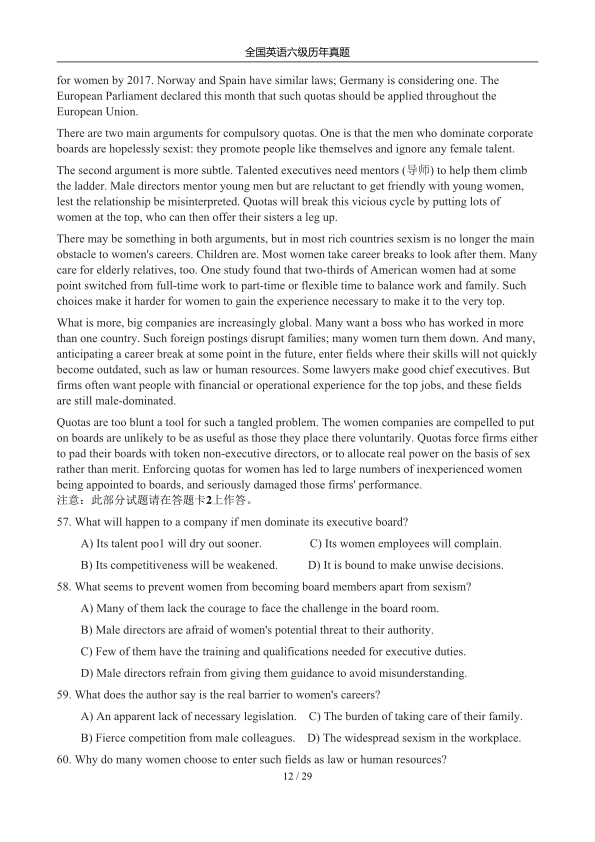
全国英语六级历年真题
12 / 29
for women by 2017. Norway and Spain have similar laws; Germany is considering one. The
European Parliament declared this month that such quotas should be applied throughout the
European Union.
There are two main arguments for compulsory quotas. One is that the men who dominate corporate
boards are hopelessly sexist: they promote people like themselves and ignore any female talent.
The second argument is more subtle. Talented executives need mentors (导师) to help them climb
the ladder. Male directors mentor young men but are reluctant to get friendly with young women,
lest the relationship be misinterpreted. Quotas will break this vicious cycle by putting lots of
women at the top, who can then offer their sisters a leg up.
There may be something in both arguments, but in most rich countries sexism is no longer the main
obstacle to women's careers. Children are. Most women take career breaks to look after them. Many
care for elderly relatives, too. One study found that two-thirds of American women had at some
point switched from full-time work to part-time or flexible time to balance work and family. Such
choices make it harder for women to gain the experience necessary to make it to the very top.
What is more, big companies are increasingly global. Many want a boss who has worked in more
than one country. Such foreign postings disrupt families; many women turn them down. And many,
anticipating a career break at some point in the future, enter fields where their skills will not quickly
become outdated, such as law or human resources. Some lawyers make good chief executives. But
firms often want people with financial or operational experience for the top jobs, and these fields
are still male-dominated.
Quotas are too blunt a tool for such a tangled problem. The women companies are compelled to put
on boards are unlikely to be as useful as those they place there voluntarily. Quotas force firms either
to pad their boards with token non-executive directors, or to allocate real power on the basis of sex
rather than merit. Enforcing quotas for women has led to large numbers of inexperienced women
being appointed to boards, and seriously damaged those firms' performance.
注意：此部分试题请在答题卡2上作答。
57. What will happen to a company if men dominate its executive board?
A) Its talent poo1 will dry out sooner.
C) Its women employees will complain.
B) Its competitiveness will be weakened.
D) It is bound to make unwise decisions.
58. What seems to prevent women from becoming board members apart from sexism?
A) Many of them lack the courage to face the challenge in the board room.
B) Male directors are afraid of women's potential threat to their authority.
C) Few of them have the training and qualifications needed for executive duties.
D) Male directors refrain from giving them guidance to avoid misunderstanding.
59. What does the author say is the real barrier to women's careers?
A) An apparent lack of necessary legislation.
C) The burden of taking care of their family.
B) Fierce competition from male colleagues.
D) The widespread sexism in the workplace.
60. Why do many women choose to enter such fields as law or human resources?
查看 / 复制本页文字
全国英语六级历年真题 12 / 29 for women by 2017. Norway and Spain have similar laws; Germany is considering one. The European Parliament declared this month that such quotas should be applied throughout the European Union. There are two main arguments for compulsory quotas. One is that the men who dominate corporate boards are hopelessly sexist: they promote people like themselves and ignore any female talent. The second argument is more subtle. Talented executives need mentors (导师) to help them climb the ladder. Male directors mentor young men but are reluctant to get friendly with young women, lest the relationship be misinterpreted. Quotas will break this vicious cycle by putting lots of women at the top, who can then offer their sisters a leg up. There may be something in both arguments, but in most rich countries sexism is no longer the main obstacle to women's careers. Children are. Most women take career breaks to look after them. Many care for elderly relatives, too. One study found that two-thirds of American women had at some point switched from full-time work to part-time or flexible time to balance work and family. Such choices make it harder for women to gain the experience necessary to make it to the very top. What is more, big companies are increasingly global. Many want a boss who has worked in more than one country. Such foreign postings disrupt families; many women turn them down. And many, anticipating a career break at some point in the future, enter fields where their skills will not quickly become outdated, such as law or human resources. Some lawyers make good chief executives. But firms often want people with financial or operational experience for the top jobs, and these fields are still male-dominated. Quotas are too blunt a tool for such a tangled problem. The women companies are compelled to put on boards are unlikely to be as useful as those they place there voluntarily. Quotas force firms either to pad their boards with token non-executive directors, or to allocate real power on the basis of sex rather than merit. Enforcing quotas for women has led to large numbers of inexperienced women being appointed to boards, and seriously damaged those firms' performance. 注意：此部分试题请在答题卡2上作答。 57. What will happen to a company if men dominate its executive board? A) Its talent poo1 will dry out sooner. C) Its women employees will complain. B) Its competitiveness will be weakened. D) It is bound to make unwise decisions. 58. What seems to prevent women from becoming board members apart from sexism? A) Many of them lack the courage to face the challenge in the board room. B) Male directors are afraid of women's potential threat to their authority. C) Few of them have the training and qualifications needed for executive duties. D) Male directors refrain from giving them guidance to avoid misunderstanding. 59. What does the author say is the real barrier to women's careers? A) An apparent lack of necessary legislation. C) The burden of taking care of their family. B) Fierce competition from male colleagues. D) The widespread sexism in the workplace. 60. Why do many women choose to enter such fields as law or human resources?
第 13 / 29 页
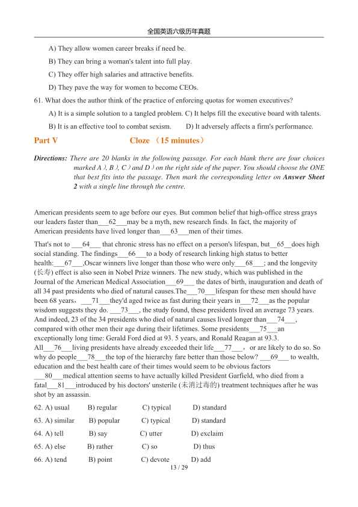
全国英语六级历年真题
13 / 29
A) They allow women career breaks if need be.
B) They can bring a woman's talent into full play.
C) They offer high salaries and attractive benefits.
D) They pave the way for women to become CEOs.
61. What does the author think of the practice of enforcing quotas for women executives?
A) It is a simple solution to a tangled problem. C) It helps fill the executive board with talents.
B) It is an effective tool to combat sexism.
D) It adversely affects a firm's performance.
Part V
Cloze （15 minutes）
Directions: There are 20 blanks in the following passage. For each blank there are four choices
marked A）, B）, C）and D）on the right side of the paper. You should choose the ONE
that best fits into the passage. Then mark the corresponding letter on Answer Sheet
2 with a single line through the centre.
American presidents seem to age before our eyes. But common belief that high-office stress grays
our leaders faster than___62___may be a myth, new research finds. In fact, the majority of
American presidents have lived longer than___63___men of their times.
That's not to ___64___ that chronic stress has no effect on a person's lifespan, but__65__does high
social standing. The findings___66___to a body of research linking high status to better
health:___67___,Oscar winners live longer than those who were only___68___; and the longevity
(长寿) effect is also seen in Nobel Prize winners. The new study, which was published in the
Journal of the American Medical Association___69___ the dates of birth, inauguration and death of
all 34 past presidents who died of natural causes.The___70___lifespan for these men should have
been 68 years，___71___they'd aged twice as fast during their years in___72___as the popular
wisdom suggests they do. ___73___, the study found, these presidents lived an average 73 years.
And indeed, 23 of the 34 presidents who died of natural causes lived longer than___74___,
compared with other men their age during their lifetimes. Some presidents___75___an
exceptionally long time: Gerald Ford died at 93. 5 years, and Ronald Reagan at 93.3.
All___76___living presidents have already exceeded their life___77___，or are likely to do so. So
why do people___78___the top of the hierarchy fare better than those below? ___69___ to wealth,
education and the best health care of their times would seem to be obvious factors
___80___medical attention seems to have actually killed President Garfield, who died from a
fatal___81___introduced by his doctors' unsterile (未消过毒的) treatment techniques after he was
shot by an assassin.
62. A) usual
B) regular
C) typical
D) standard
63. A) similar
B) popular
C) typical
D) standard
64. A) tell
B) say
C) utter
D) exclaim
65. A) else
B) rather
C) so
D) thus
66. A) tend
B) point
C) devote
D) add
查看 / 复制本页文字
全国英语六级历年真题 13 / 29 A) They allow women career breaks if need be. B) They can bring a woman's talent into full play. C) They offer high salaries and attractive benefits. D) They pave the way for women to become CEOs. 61. What does the author think of the practice of enforcing quotas for women executives? A) It is a simple solution to a tangled problem. C) It helps fill the executive board with talents. B) It is an effective tool to combat sexism. D) It adversely affects a firm's performance. Part V Cloze （15 minutes） Directions: There are 20 blanks in the following passage. For each blank there are four choices marked A）, B）, C）and D）on the right side of the paper. You should choose the ONE that best fits into the passage. Then mark the corresponding letter on Answer Sheet 2 with a single line through the centre. American presidents seem to age before our eyes. But common belief that high-office stress grays our leaders faster than___62___may be a myth, new research finds. In fact, the majority of American presidents have lived longer than___63___men of their times. That's not to ___64___ that chronic stress has no effect on a person's lifespan, but__65__does high social standing. The findings___66___to a body of research linking high status to better health:___67___,Oscar winners live longer than those who were only___68___; and the longevity (长寿) effect is also seen in Nobel Prize winners. The new study, which was published in the Journal of the American Medical Association___69___ the dates of birth, inauguration and death of all 34 past presidents who died of natural causes.The___70___lifespan for these men should have been 68 years，___71___they'd aged twice as fast during their years in___72___as the popular wisdom suggests they do. ___73___, the study found, these presidents lived an average 73 years. And indeed, 23 of the 34 presidents who died of natural causes lived longer than___74___, compared with other men their age during their lifetimes. Some presidents___75___an exceptionally long time: Gerald Ford died at 93. 5 years, and Ronald Reagan at 93.3. All___76___living presidents have already exceeded their life___77___，or are likely to do so. So why do people___78___the top of the hierarchy fare better than those below? ___69___ to wealth, education and the best health care of their times would seem to be obvious factors ___80___medical attention seems to have actually killed President Garfield, who died from a fatal___81___introduced by his doctors' unsterile (未消过毒的) treatment techniques after he was shot by an assassin. 62. A) usual B) regular C) typical D) standard 63. A) similar B) popular C) typical D) standard 64. A) tell B) say C) utter D) exclaim 65. A) else B) rather C) so D) thus 66. A) tend B) point C) devote D) add
第 14 / 29 页
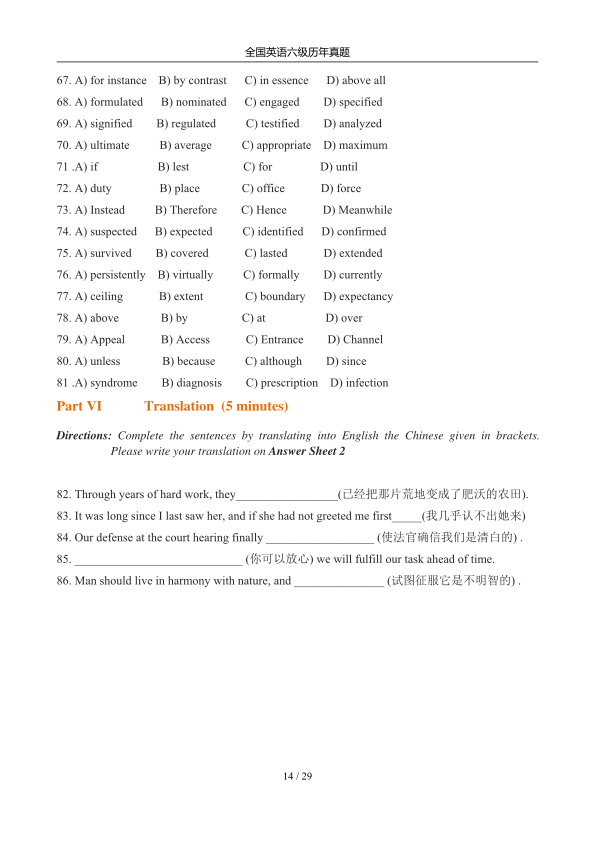
全国英语六级历年真题
14 / 29
67. A) for instance
B) by contrast
C) in essence
D) above all
68. A) formulated
B) nominated
C) engaged
D) specified
69. A) signified
B) regulated
C) testified
D) analyzed
70. A) ultimate
B) average
C) appropriate
D) maximum
71 .A) if
B) lest
C) for
D) until
72. A) duty
B) place
C) office
D) force
73. A) Instead
B) Therefore
C) Hence
D) Meanwhile
74. A) suspected
B) expected
C) identified
D) confirmed
75. A) survived
B) covered
C) lasted
D) extended
76. A) persistently
B) virtually
C) formally
D) currently
77. A) ceiling
B) extent
C) boundary
D) expectancy
78. A) above
B) by
C) at
D) over
79. A) Appeal
B) Access
C) Entrance
D) Channel
80. A) unless
B) because
C) although
D) since
81 .A) syndrome
B) diagnosis
C) prescription
D) infection
Part VI
Translation (5 minutes)
Directions: Complete the sentences by translating into English the Chinese given in brackets.
Please write your translation on Answer Sheet 2
82. Through years of hard work, they_________________(已经把那片荒地变成了肥沃的农田).
83. It was long since I last saw her, and if she had not greeted me first_____(我几乎认不出她来)
84. Our defense at the court hearing finally __________________ (使法官确信我们是清白的) .
85. ____________________________ (你可以放心) we will fulfill our task ahead of time.
86. Man should live in harmony with nature, and _______________ (试图征服它是不明智的) .
查看 / 复制本页文字
全国英语六级历年真题 14 / 29 67. A) for instance B) by contrast C) in essence D) above all 68. A) formulated B) nominated C) engaged D) specified 69. A) signified B) regulated C) testified D) analyzed 70. A) ultimate B) average C) appropriate D) maximum 71 .A) if B) lest C) for D) until 72. A) duty B) place C) office D) force 73. A) Instead B) Therefore C) Hence D) Meanwhile 74. A) suspected B) expected C) identified D) confirmed 75. A) survived B) covered C) lasted D) extended 76. A) persistently B) virtually C) formally D) currently 77. A) ceiling B) extent C) boundary D) expectancy 78. A) above B) by C) at D) over 79. A) Appeal B) Access C) Entrance D) Channel 80. A) unless B) because C) although D) since 81 .A) syndrome B) diagnosis C) prescription D) infection Part VI Translation (5 minutes) Directions: Complete the sentences by translating into English the Chinese given in brackets. Please write your translation on Answer Sheet 2 82. Through years of hard work, they_________________(已经把那片荒地变成了肥沃的农田). 83. It was long since I last saw her, and if she had not greeted me first_____(我几乎认不出她来) 84. Our defense at the court hearing finally __________________ (使法官确信我们是清白的) . 85. ____________________________ (你可以放心) we will fulfill our task ahead of time. 86. Man should live in harmony with nature, and _______________ (试图征服它是不明智的) .
第 15 / 29 页
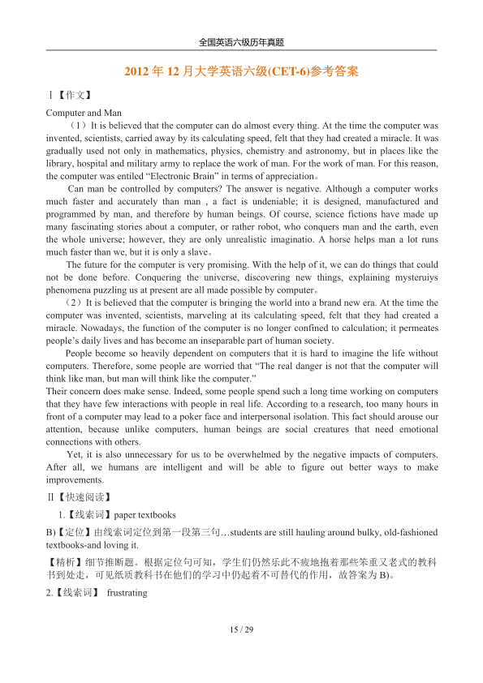
全国英语六级历年真题
15 / 29
2012 年12 月大学英语六级(CET-6)参考答案
Ⅰ【作文】
Computer and Man
（1）It is believed that the computer can do almost every thing. At the time the computer was
invented, scientists, carried away by its calculating speed, felt that they had created a miracle. It was
gradually used not only in mathematics, physics, chemistry and astronomy, but in places like the
library, hospital and military army to replace the work of man. For the work of man. For this reason,
the computer was entiled “Electronic Brain” in terms of appreciation。
Can man be controlled by computers? The answer is negative. Although a computer works
much faster and accurately than man , a fact is undeniable; it is designed, manufactured and
programmed by man, and therefore by human beings. Of course, science fictions have made up
many fascinating stories about a computer, or rather robot, who conquers man and the earth, even
the whole universe; however, they are only unrealistic imaginatio. A horse helps man a lot runs
much faster than we, but it is only a slave。
The future for the computer is very promising. With the help of it, we can do things that could
not be done before. Conquering the universe, discovering new things, explaining mysteruiys
phenomena puzzling us at present are all made possible by computer。
（2）It is believed that the computer is bringing the world into a brand new era. At the time the
computer was invented, scientists, marveling at its calculating speed, felt that they had created a
miracle. Nowadays, the function of the computer is no longer confined to calculation; it permeates
people’s daily lives and has become an inseparable part of human society.
People become so heavily dependent on computers that it is hard to imagine the life without
computers. Therefore, some people are worried that “The real danger is not that the computer will
think like man, but man will think like the computer.”
Their concern does make sense. Indeed, some people spend such a long time working on computers
that they have few interactions with people in real life. According to a research, too many hours in
front of a computer may lead to a poker face and interpersonal isolation. This fact should arouse our
attention, because unlike computers, human beings are social creatures that need emotional
connections with others.
Yet, it is also unnecessary for us to be overwhelmed by the negative impacts of computers.
After all, we humans are intelligent and will be able to figure out better ways to make
improvements.
Ⅱ【快速阅读】
1.【线索词】paper textbooks
B)【定位】由线索词定位到第一段第三句…students are still hauling around bulky, old-fashioned
textbooks-and loving it.
【精析】细节推断题。根据定位句可知，学生们仍然乐此不疲地抱着那些笨重又老式的教科
书到处走，可见纸质教科书在他们的学习中仍起着不可替代的作用，故答案为B)。
2.【线索词】frustrating
查看 / 复制本页文字
全国英语六级历年真题 15 / 29 2012 年12 月大学英语六级(CET-6)参考答案 Ⅰ【作文】 Computer and Man （1）It is believed that the computer can do almost every thing. At the time the computer was invented, scientists, carried away by its calculating speed, felt that they had created a miracle. It was gradually used not only in mathematics, physics, chemistry and astronomy, but in places like the library, hospital and military army to replace the work of man. For the work of man. For this reason, the computer was entiled “Electronic Brain” in terms of appreciation。 Can man be controlled by computers? The answer is negative. Although a computer works much faster and accurately than man , a fact is undeniable; it is designed, manufactured and programmed by man, and therefore by human beings. Of course, science fictions have made up many fascinating stories about a computer, or rather robot, who conquers man and the earth, even the whole universe; however, they are only unrealistic imaginatio. A horse helps man a lot runs much faster than we, but it is only a slave。 The future for the computer is very promising. With the help of it, we can do things that could not be done before. Conquering the universe, discovering new things, explaining mysteruiys phenomena puzzling us at present are all made possible by computer。 （2）It is believed that the computer is bringing the world into a brand new era. At the time the computer was invented, scientists, marveling at its calculating speed, felt that they had created a miracle. Nowadays, the function of the computer is no longer confined to calculation; it permeates people’s daily lives and has become an inseparable part of human society. People become so heavily dependent on computers that it is hard to imagine the life without computers. Therefore, some people are worried that “The real danger is not that the computer will think like man, but man will think like the computer.” Their concern does make sense. Indeed, some people spend such a long time working on computers that they have few interactions with people in real life. According to a research, too many hours in front of a computer may lead to a poker face and interpersonal isolation. This fact should arouse our attention, because unlike computers, human beings are social creatures that need emotional connections with others. Yet, it is also unnecessary for us to be overwhelmed by the negative impacts of computers. After all, we humans are intelligent and will be able to figure out better ways to make improvements. Ⅱ【快速阅读】 1.【线索词】paper textbooks B)【定位】由线索词定位到第一段第三句…students are still hauling around bulky, old-fashioned textbooks-and loving it. 【精析】细节推断题。根据定位句可知，学生们仍然乐此不疲地抱着那些笨重又老式的教科 书到处走，可见纸质教科书在他们的学习中仍起着不可替代的作用，故答案为B)。 2.【线索词】frustrating
第 16 / 29 页
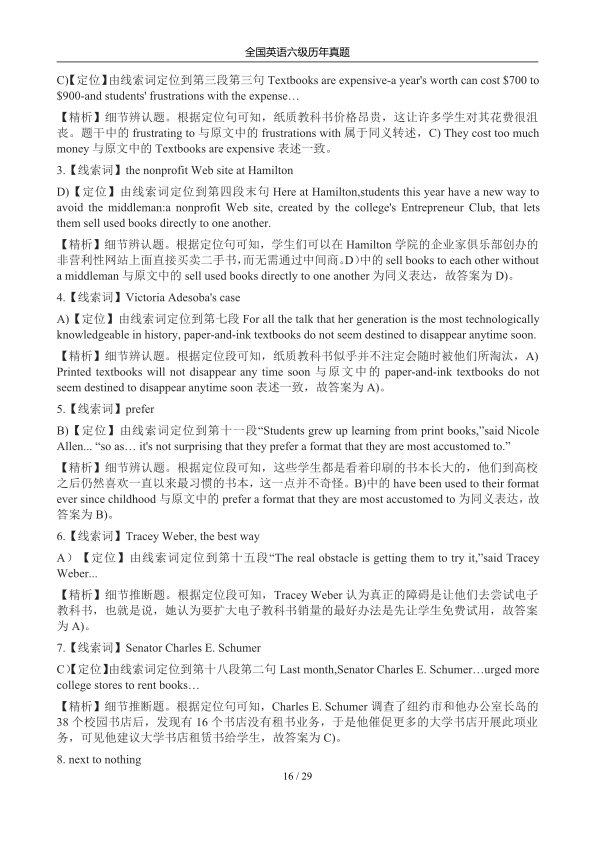
全国英语六级历年真题
16 / 29
C)【定位】由线索词定位到第三段第三句Textbooks are expensive-a year's worth can cost $700 to
$900-and students' frustrations with the expense…
【精析】细节辨认题。根据定位句可知，纸质教科书价格昂贵，这让许多学生对其花费很沮
丧。题干中的frustrating to 与原文中的frustrations with 属于同义转述，C) They cost too much
money 与原文中的Textbooks are expensive 表述一致。
3.【线索词】the nonprofit Web site at Hamilton
D)【定位】由线索词定位到第四段末句Here at Hamilton,students this year have a new way to
avoid the middleman:a nonprofit Web site, created by the college's Entrepreneur Club, that lets
them sell used books directly to one another.
【精析】细节辨认题。根据定位句可知，学生们可以在Hamilton 学院的企业家俱乐部创办的
非营利性网站上面直接买卖二手书，而无需通过中间商。D）中的sell books to each other without
a middleman 与原文中的sell used books directly to one another 为同义表达，故答案为D)。
4.【线索词】Victoria Adesoba's case
A)【定位】由线索词定位到第七段For all the talk that her generation is the most technologically
knowledgeable in history, paper-and-ink textbooks do not seem destined to disappear anytime soon.
【精析】细节辨认题。根据定位段可知，纸质教科书似乎并不注定会随时被他们所淘汰，A)
Printed textbooks will not disappear any time soon 与原文中的paper-and-ink textbooks do not
seem destined to disappear anytime soon 表述一致，故答案为A)。
5.【线索词】prefer
B)【定位】由线索词定位到第十一段“Students grew up learning from print books,”said Nicole
Allen... “so as… it's not surprising that they prefer a format that they are most accustomed to.”
【精析】细节辨认题。根据定位段可知，这些学生都是看着印刷的书本长大的，他们到高校
之后仍然喜欢一直以来最习惯的书本，这一点并不奇怪。B)中的have been used to their format
ever since childhood 与原文中的prefer a format that they are most accustomed to 为同义表达，故
答案为B)。
6.【线索词】Tracey Weber, the best way
A）【定位】由线索词定位到第十五段“The real obstacle is getting them to try it,”said Tracey
Weber...
【精析】细节推断题。根据定位段可知，Tracey Weber 认为真正的障碍是让他们去尝试电子
教科书，也就是说，她认为要扩大电子教科书销量的最好办法是先让学生免费试用，故答案
为A)。
7.【线索词】Senator Charles E. Schumer
C）
【定位】由线索词定位到第十八段第二句Last month,Senator Charles E. Schumer…urged more
college stores to rent books…
【精析】细节推断题。根据定位句可知，Charles E. Schumer 调查了纽约市和他办公室长岛的
38 个校园书店后，发现有16 个书店没有租书业务，于是他催促更多的大学书店开展此项业
务，可见他建议大学书店租赁书给学生，故答案为C)。
8. next to nothing
查看 / 复制本页文字
全国英语六级历年真题 16 / 29 C)【定位】由线索词定位到第三段第三句Textbooks are expensive-a year's worth can cost $700 to $900-and students' frustrations with the expense… 【精析】细节辨认题。根据定位句可知，纸质教科书价格昂贵，这让许多学生对其花费很沮 丧。题干中的frustrating to 与原文中的frustrations with 属于同义转述，C) They cost too much money 与原文中的Textbooks are expensive 表述一致。 3.【线索词】the nonprofit Web site at Hamilton D)【定位】由线索词定位到第四段末句Here at Hamilton,students this year have a new way to avoid the middleman:a nonprofit Web site, created by the college's Entrepreneur Club, that lets them sell used books directly to one another. 【精析】细节辨认题。根据定位句可知，学生们可以在Hamilton 学院的企业家俱乐部创办的 非营利性网站上面直接买卖二手书，而无需通过中间商。D）中的sell books to each other without a middleman 与原文中的sell used books directly to one another 为同义表达，故答案为D)。 4.【线索词】Victoria Adesoba's case A)【定位】由线索词定位到第七段For all the talk that her generation is the most technologically knowledgeable in history, paper-and-ink textbooks do not seem destined to disappear anytime soon. 【精析】细节辨认题。根据定位段可知，纸质教科书似乎并不注定会随时被他们所淘汰，A) Printed textbooks will not disappear any time soon 与原文中的paper-and-ink textbooks do not seem destined to disappear anytime soon 表述一致，故答案为A)。 5.【线索词】prefer B)【定位】由线索词定位到第十一段“Students grew up learning from print books,”said Nicole Allen... “so as… it's not surprising that they prefer a format that they are most accustomed to.” 【精析】细节辨认题。根据定位段可知，这些学生都是看着印刷的书本长大的，他们到高校 之后仍然喜欢一直以来最习惯的书本，这一点并不奇怪。B)中的have been used to their format ever since childhood 与原文中的prefer a format that they are most accustomed to 为同义表达，故 答案为B)。 6.【线索词】Tracey Weber, the best way A）【定位】由线索词定位到第十五段“The real obstacle is getting them to try it,”said Tracey Weber... 【精析】细节推断题。根据定位段可知，Tracey Weber 认为真正的障碍是让他们去尝试电子 教科书，也就是说，她认为要扩大电子教科书销量的最好办法是先让学生免费试用，故答案 为A)。 7.【线索词】Senator Charles E. Schumer C） 【定位】由线索词定位到第十八段第二句Last month,Senator Charles E. Schumer…urged more college stores to rent books… 【精析】细节推断题。根据定位句可知，Charles E. Schumer 调查了纽约市和他办公室长岛的 38 个校园书店后，发现有16 个书店没有租书业务，于是他催促更多的大学书店开展此项业 务，可见他建议大学书店租赁书给学生，故答案为C)。 8. next to nothing
第 17 / 29 页
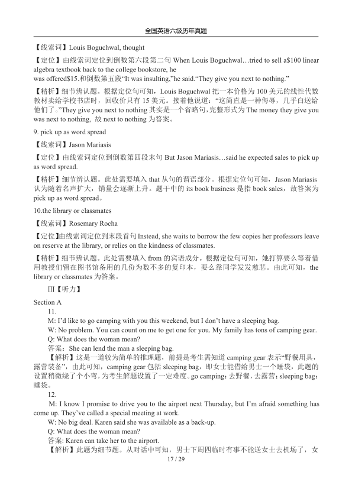
全国英语六级历年真题
17 / 29
【线索词】Louis Boguchwal, thought
【定位】由线索词定位到倒数第六段第二句When Louis Boguchwal…tried to sell a$100 linear
algebra textbook back to the college bookstore, he
was offered$15.和倒数第五段“It was insulting,”he said.“They give you next to nothing.”
【精析】细节辨认题。根据定位句可知，Louis Boguchwal 把一本价格为100 美元的线性代数
教材卖给学校书店时，回收价只有15 美元。接着他说道：“这简直是一种侮辱，几乎白送给
他们了。”They give you next to nothing 其实是一个省略句，完整形式为The money they give you
was next to nothing, 故next to nothing 为答案。
9. pick up as word spread
【线索词】Jason Mariasis
【定位】由线索词定位到倒数第四段末句But Jason Mariasis…said he expected sales to pick up
as word spread.
【精析】细节辨认题。此处需要填入that 从句的谓语部分。根据定位句可知，Jason Mariasis
认为随着名声扩大，销量会逐渐上升。题干中的its book business 是指book sales，故答案为
pick up as word spread。
10.the library or classmates
【线索词】Rosemary Rocha
【定位】由线索词定位到末段首句Instead, she waits to borrow the few copies her professors leave
on reserve at the library, or relies on the kindness of classmates.
【精析】细节辨认题。此处需要填入from 的宾语成分。根据定位句可知，她打算要么等着借
用教授们留在图书馆备用的几份为数不多的复印本，要么靠同学发发慈悲。由此可知，the
library or classmates 为答案。
Ⅲ【听力】
Section A
11.
M: I’d like to go camping with you this weekend, but I don’t have a sleeping bag.
W: No problem. You can count on me to get one for you. My family has tons of camping gear.
Q: What does the woman mean?
答案：She can lend the man a sleeping bag.
【解析】这是一道较为简单的推理题，前提是考生需知道camping gear 表示“野餐用具，
露营装备”，由此可知，camping gear 包括sleeping bag，即女士能借给男士一个睡袋，此题的
设置稍微绕了个小弯，为考生解题设置了一定难度。go camping：去野餐，去露营；sleeping bag：
睡袋。
12.
M: I know I promise to drive you to the airport next Thursday, but I’m afraid something has
come up. They’ve called a special meeting at work.
W: No big deal. Karen said she was available as a back-up.
Q: What does the woman mean?
答案: Karen can take her to the airport.
【解析】此题为细节题。从对话中可知，男士下周四临时有事不能送女士去机场了，女
查看 / 复制本页文字
全国英语六级历年真题 17 / 29 【线索词】Louis Boguchwal, thought 【定位】由线索词定位到倒数第六段第二句When Louis Boguchwal…tried to sell a$100 linear algebra textbook back to the college bookstore, he was offered$15.和倒数第五段“It was insulting,”he said.“They give you next to nothing.” 【精析】细节辨认题。根据定位句可知，Louis Boguchwal 把一本价格为100 美元的线性代数 教材卖给学校书店时，回收价只有15 美元。接着他说道：“这简直是一种侮辱，几乎白送给 他们了。”They give you next to nothing 其实是一个省略句，完整形式为The money they give you was next to nothing, 故next to nothing 为答案。 9. pick up as word spread 【线索词】Jason Mariasis 【定位】由线索词定位到倒数第四段末句But Jason Mariasis…said he expected sales to pick up as word spread. 【精析】细节辨认题。此处需要填入that 从句的谓语部分。根据定位句可知，Jason Mariasis 认为随着名声扩大，销量会逐渐上升。题干中的its book business 是指book sales，故答案为 pick up as word spread。 10.the library or classmates 【线索词】Rosemary Rocha 【定位】由线索词定位到末段首句Instead, she waits to borrow the few copies her professors leave on reserve at the library, or relies on the kindness of classmates. 【精析】细节辨认题。此处需要填入from 的宾语成分。根据定位句可知，她打算要么等着借 用教授们留在图书馆备用的几份为数不多的复印本，要么靠同学发发慈悲。由此可知，the library or classmates 为答案。 Ⅲ【听力】 Section A 11. M: I’d like to go camping with you this weekend, but I don’t have a sleeping bag. W: No problem. You can count on me to get one for you. My family has tons of camping gear. Q: What does the woman mean? 答案：She can lend the man a sleeping bag. 【解析】这是一道较为简单的推理题，前提是考生需知道camping gear 表示“野餐用具， 露营装备”，由此可知，camping gear 包括sleeping bag，即女士能借给男士一个睡袋，此题的 设置稍微绕了个小弯，为考生解题设置了一定难度。go camping：去野餐，去露营；sleeping bag： 睡袋。 12. M: I know I promise to drive you to the airport next Thursday, but I’m afraid something has come up. They’ve called a special meeting at work. W: No big deal. Karen said she was available as a back-up. Q: What does the woman mean? 答案: Karen can take her to the airport. 【解析】此题为细节题。从对话中可知，男士下周四临时有事不能送女士去机场了，女
第 18 / 29 页
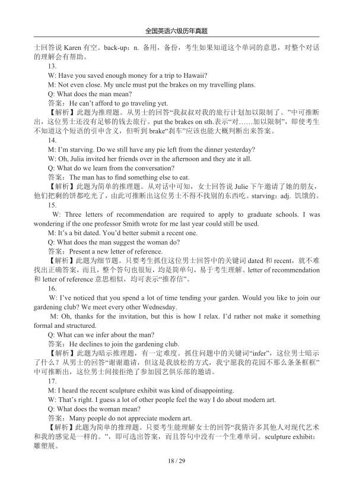
全国英语六级历年真题
18 / 29
士回答说Karen 有空。back-up：n. 备用，备份，考生如果知道这个单词的意思，对整个对话
的理解会有帮助。
13.
W: Have you saved enough money for a trip to Hawaii?
M: Not even close. My uncle must put the brakes on my travelling plans.
Q: What does the man mean?
答案：He can’t afford to go traveling yet.
【解析】此题为推理题。从男士的回答“我叔叔对我的旅行计划加以限制了。”中可推断
出，这位男士还没有足够的钱去旅行。put the brakes on sth.表示“对……加以限制”，即使考生
不知道这个短语的引申含义，但听到brake“刹车”应该也能大概判断出来答案。
14.
M: I’m starving. Do we still have any pie left from the dinner yesterday?
W: Oh, Julia invited her friends over in the afternoon and they ate it all.
Q: What do we learn from the conversation?
答案：The man has to find something else to eat.
【解析】此题为简单的推理题。从对话中可知，女士回答说Julie 下午邀请了她的朋友，
他们把剩的饼都吃光了，由此可推断出这位男士不得不找别的东西吃。starving：adj. 饥饿的。
15.
W: Three letters of recommendation are required to apply to graduate schools. I was
wondering if the one professor Smith wrote for me last year could still be used.
M: It’s a bit dated. You’d better submit a recent one.
Q: What does the man suggest the woman do?
答案：Present a new letter of reference.
【解析】此题为细节题。只要考生抓住这位男士回答中的关键词dated 和recent，就不难
找出正确答案，而且，整个答句也很短，均是简单句，易于考生理解。letter of recommendation
和letter of reference 意思相似，均可表示“推荐信”。
16.
W: I’ve noticed that you spend a lot of time tending your garden. Would you like to join our
gardening club? We meet every other Wednesday.
M: Oh, thanks for the invitation, but this is how I relax. I’d rather not make it something
formal and structured.
Q: What can we infer about the man?
答案：He declines to join the gardening club.
【解析】此题为暗示推理题，有一定难度。抓住问题中的关键词“infer”，这位男士暗示
了什么？从男士的回答“谢谢邀请，但这是我放松的方式，我宁愿我的花园不那么条条框框”
中可推断出，这位男士间接拒绝了参加园艺俱乐部的邀请。
17.
M: I heard the recent sculpture exhibit was kind of disappointing.
W: That’s right. I guess a lot of other people feel the way I do about modern art.
Q: What does the woman mean?
答案：Many people do not appreciate modern art.
【解析】此题为简单的推理题。只要考生能理解女士的回答“我猜许多其他人对现代艺术
和我的感觉是一样的。”，即可选出答案，而且答句中没有一个生难单词。sculpture exhibit：
雕塑展。
查看 / 复制本页文字
全国英语六级历年真题 18 / 29 士回答说Karen 有空。back-up：n. 备用，备份，考生如果知道这个单词的意思，对整个对话 的理解会有帮助。 13. W: Have you saved enough money for a trip to Hawaii? M: Not even close. My uncle must put the brakes on my travelling plans. Q: What does the man mean? 答案：He can’t afford to go traveling yet. 【解析】此题为推理题。从男士的回答“我叔叔对我的旅行计划加以限制了。”中可推断 出，这位男士还没有足够的钱去旅行。put the brakes on sth.表示“对……加以限制”，即使考生 不知道这个短语的引申含义，但听到brake“刹车”应该也能大概判断出来答案。 14. M: I’m starving. Do we still have any pie left from the dinner yesterday? W: Oh, Julia invited her friends over in the afternoon and they ate it all. Q: What do we learn from the conversation? 答案：The man has to find something else to eat. 【解析】此题为简单的推理题。从对话中可知，女士回答说Julie 下午邀请了她的朋友， 他们把剩的饼都吃光了，由此可推断出这位男士不得不找别的东西吃。starving：adj. 饥饿的。 15. W: Three letters of recommendation are required to apply to graduate schools. I was wondering if the one professor Smith wrote for me last year could still be used. M: It’s a bit dated. You’d better submit a recent one. Q: What does the man suggest the woman do? 答案：Present a new letter of reference. 【解析】此题为细节题。只要考生抓住这位男士回答中的关键词dated 和recent，就不难 找出正确答案，而且，整个答句也很短，均是简单句，易于考生理解。letter of recommendation 和letter of reference 意思相似，均可表示“推荐信”。 16. W: I’ve noticed that you spend a lot of time tending your garden. Would you like to join our gardening club? We meet every other Wednesday. M: Oh, thanks for the invitation, but this is how I relax. I’d rather not make it something formal and structured. Q: What can we infer about the man? 答案：He declines to join the gardening club. 【解析】此题为暗示推理题，有一定难度。抓住问题中的关键词“infer”，这位男士暗示 了什么？从男士的回答“谢谢邀请，但这是我放松的方式，我宁愿我的花园不那么条条框框” 中可推断出，这位男士间接拒绝了参加园艺俱乐部的邀请。 17. M: I heard the recent sculpture exhibit was kind of disappointing. W: That’s right. I guess a lot of other people feel the way I do about modern art. Q: What does the woman mean? 答案：Many people do not appreciate modern art. 【解析】此题为简单的推理题。只要考生能理解女士的回答“我猜许多其他人对现代艺术 和我的感觉是一样的。”，即可选出答案，而且答句中没有一个生难单词。sculpture exhibit： 雕塑展。
第 19 / 29 页
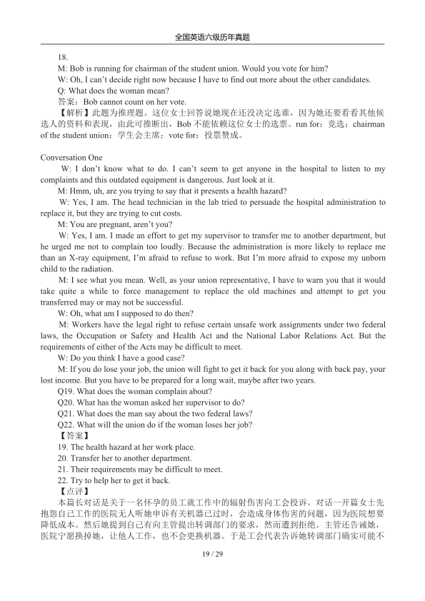
全国英语六级历年真题
19 / 29
18.
M: Bob is running for chairman of the student union. Would you vote for him?
W: Oh, I can’t decide right now because I have to find out more about the other candidates.
Q: What does the woman mean?
答案：Bob cannot count on her vote.
【解析】此题为推理题。这位女士回答说她现在还没决定选谁，因为她还要看看其他候
选人的资料和表现，由此可推断出，Bob 不能依赖这位女士的选票。run for：竞选；chairman
of the student union：学生会主席；vote for：投票赞成。
Conversation One
W: I don’t know what to do. I can’t seem to get anyone in the hospital to listen to my
complaints and this outdated equipment is dangerous. Just look at it.
M: Hmm, uh, are you trying to say that it presents a health hazard?
W: Yes, I am. The head technician in the lab tried to persuade the hospital administration to
replace it, but they are trying to cut costs.
M: You are pregnant, aren’t you?
W: Yes, I am. I made an effort to get my supervisor to transfer me to another department, but
he urged me not to complain too loudly. Because the administration is more likely to replace me
than an X-ray equipment, I’m afraid to refuse to work. But I’m more afraid to expose my unborn
child to the radiation.
M: I see what you mean. Well, as your union representative, I have to warn you that it would
take quite a while to force management to replace the old machines and attempt to get you
transferred may or may not be successful.
W: Oh, what am I supposed to do then?
M: Workers have the legal right to refuse certain unsafe work assignments under two federal
laws, the Occupation or Safety and Health Act and the National Labor Relations Act. But the
requirements of either of the Acts may be difficult to meet.
W: Do you think I have a good case?
M: If you do lose your job, the union will fight to get it back for you along with back pay, your
lost income. But you have to be prepared for a long wait, maybe after two years.
Q19. What does the woman complain about?
Q20. What has the woman asked her supervisor to do?
Q21. What does the man say about the two federal laws?
Q22. What will the union do if the woman loses her job?
【答案】
19. The health hazard at her work place.
20. Transfer her to another department.
21. Their requirements may be difficult to meet.
22. Try to help her to get it back.
【点评】
本篇长对话是关于一名怀孕的员工就工作中的辐射伤害向工会投诉。对话一开篇女士先
抱怨自己工作的医院无人听她申诉有关机器已过时，会造成身体伤害的问题，因为医院想要
降低成本。然后她提到自己有向主管提出转调部门的要求，然而遭到拒绝。主管还告诫她，
医院宁愿换掉她，让他人工作，也不会更换机器。于是工会代表告诉她转调部门确实可能不
查看 / 复制本页文字
全国英语六级历年真题 19 / 29 18. M: Bob is running for chairman of the student union. Would you vote for him? W: Oh, I can’t decide right now because I have to find out more about the other candidates. Q: What does the woman mean? 答案：Bob cannot count on her vote. 【解析】此题为推理题。这位女士回答说她现在还没决定选谁，因为她还要看看其他候 选人的资料和表现，由此可推断出，Bob 不能依赖这位女士的选票。run for：竞选；chairman of the student union：学生会主席；vote for：投票赞成。 Conversation One W: I don’t know what to do. I can’t seem to get anyone in the hospital to listen to my complaints and this outdated equipment is dangerous. Just look at it. M: Hmm, uh, are you trying to say that it presents a health hazard? W: Yes, I am. The head technician in the lab tried to persuade the hospital administration to replace it, but they are trying to cut costs. M: You are pregnant, aren’t you? W: Yes, I am. I made an effort to get my supervisor to transfer me to another department, but he urged me not to complain too loudly. Because the administration is more likely to replace me than an X-ray equipment, I’m afraid to refuse to work. But I’m more afraid to expose my unborn child to the radiation. M: I see what you mean. Well, as your union representative, I have to warn you that it would take quite a while to force management to replace the old machines and attempt to get you transferred may or may not be successful. W: Oh, what am I supposed to do then? M: Workers have the legal right to refuse certain unsafe work assignments under two federal laws, the Occupation or Safety and Health Act and the National Labor Relations Act. But the requirements of either of the Acts may be difficult to meet. W: Do you think I have a good case? M: If you do lose your job, the union will fight to get it back for you along with back pay, your lost income. But you have to be prepared for a long wait, maybe after two years. Q19. What does the woman complain about? Q20. What has the woman asked her supervisor to do? Q21. What does the man say about the two federal laws? Q22. What will the union do if the woman loses her job? 【答案】 19. The health hazard at her work place. 20. Transfer her to another department. 21. Their requirements may be difficult to meet. 22. Try to help her to get it back. 【点评】 本篇长对话是关于一名怀孕的员工就工作中的辐射伤害向工会投诉。对话一开篇女士先 抱怨自己工作的医院无人听她申诉有关机器已过时，会造成身体伤害的问题，因为医院想要 降低成本。然后她提到自己有向主管提出转调部门的要求，然而遭到拒绝。主管还告诫她， 医院宁愿换掉她，让他人工作，也不会更换机器。于是工会代表告诉她转调部门确实可能不
第 20 / 29 页
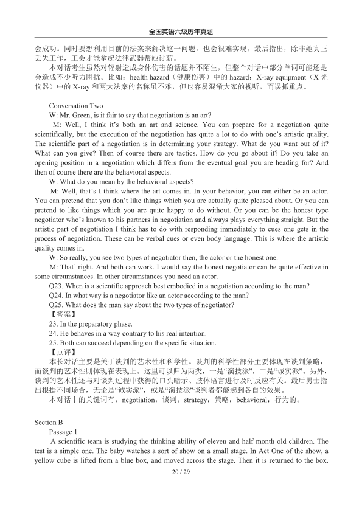
全国英语六级历年真题
20 / 29
会成功。同时要想利用目前的法案来解决这一问题，也会很难实现。最后指出，除非她真正
丢失工作，工会才能拿起法律武器帮她讨薪。
本对话考生虽然对辐射造成身体伤害的话题并不陌生，但整个对话中部分单词可能还是
会造成不少听力困扰。比如：health hazard（健康伤害）中的hazard；X-ray equipment（X 光
仪器）中的X-ray 和两大法案的名称虽不难，但也容易混淆大家的视听，而误抓重点。
Conversation Two
W: Mr. Green, is it fair to say that negotiation is an art?
M: Well, I think it’s both an art and science. You can prepare for a negotiation quite
scientifically, but the execution of the negotiation has quite a lot to do with one’s artistic quality.
The scientific part of a negotiation is in determining your strategy. What do you want out of it?
What can you give? Then of course there are tactics. How do you go about it? Do you take an
opening position in a negotiation which differs from the eventual goal you are heading for? And
then of course there are the behavioral aspects.
W: What do you mean by the behavioral aspects?
M: Well, that’s I think where the art comes in. In your behavior, you can either be an actor.
You can pretend that you don’t like things which you are actually quite pleased about. Or you can
pretend to like things which you are quite happy to do without. Or you can be the honest type
negotiator who’s known to his partners in negotiation and always plays everything straight. But the
artistic part of negotiation I think has to do with responding immediately to cues one gets in the
process of negotiation. These can be verbal cues or even body language. This is where the artistic
quality comes in.
W: So really, you see two types of negotiator then, the actor or the honest one.
M: That’ right. And both can work. I would say the honest negotiator can be quite effective in
some circumstances. In other circumstances you need an actor.
Q23. When is a scientific approach best embodied in a negotiation according to the man?
Q24. In what way is a negotiator like an actor according to the man?
Q25. What does the man say about the two types of negotiator?
【答案】
23. In the preparatory phase.
24. He behaves in a way contrary to his real intention.
25. Both can succeed depending on the specific situation.
【点评】
本长对话主要是关于谈判的艺术性和科学性。谈判的科学性部分主要体现在谈判策略，
而谈判的艺术性则体现在表现上。这里可以归为两类，一是“演技派”，二是“诚实派”。另外，
谈判的艺术性还与对谈判过程中获得的口头暗示、肢体语言进行及时反应有关。最后男士指
出根据不同场合，无论是“诚实派”，或是“演技派”谈判者都能起到各自的效果。
本对话中的关键词有：negotiation：谈判；strategy：策略；behavioral：行为的。
Section B
Passage 1
A scientific team is studying the thinking ability of eleven and half month old children. The
test is a simple one. The baby watches a sort of show on a small stage. In Act One of the show, a
yellow cube is lifted from a blue box, and moved across the stage. Then it is returned to the box.
查看 / 复制本页文字
全国英语六级历年真题 20 / 29 会成功。同时要想利用目前的法案来解决这一问题，也会很难实现。最后指出，除非她真正 丢失工作，工会才能拿起法律武器帮她讨薪。 本对话考生虽然对辐射造成身体伤害的话题并不陌生，但整个对话中部分单词可能还是 会造成不少听力困扰。比如：health hazard（健康伤害）中的hazard；X-ray equipment（X 光 仪器）中的X-ray 和两大法案的名称虽不难，但也容易混淆大家的视听，而误抓重点。 Conversation Two W: Mr. Green, is it fair to say that negotiation is an art? M: Well, I think it’s both an art and science. You can prepare for a negotiation quite scientifically, but the execution of the negotiation has quite a lot to do with one’s artistic quality. The scientific part of a negotiation is in determining your strategy. What do you want out of it? What can you give? Then of course there are tactics. How do you go about it? Do you take an opening position in a negotiation which differs from the eventual goal you are heading for? And then of course there are the behavioral aspects. W: What do you mean by the behavioral aspects? M: Well, that’s I think where the art comes in. In your behavior, you can either be an actor. You can pretend that you don’t like things which you are actually quite pleased about. Or you can pretend to like things which you are quite happy to do without. Or you can be the honest type negotiator who’s known to his partners in negotiation and always plays everything straight. But the artistic part of negotiation I think has to do with responding immediately to cues one gets in the process of negotiation. These can be verbal cues or even body language. This is where the artistic quality comes in. W: So really, you see two types of negotiator then, the actor or the honest one. M: That’ right. And both can work. I would say the honest negotiator can be quite effective in some circumstances. In other circumstances you need an actor. Q23. When is a scientific approach best embodied in a negotiation according to the man? Q24. In what way is a negotiator like an actor according to the man? Q25. What does the man say about the two types of negotiator? 【答案】 23. In the preparatory phase. 24. He behaves in a way contrary to his real intention. 25. Both can succeed depending on the specific situation. 【点评】 本长对话主要是关于谈判的艺术性和科学性。谈判的科学性部分主要体现在谈判策略， 而谈判的艺术性则体现在表现上。这里可以归为两类，一是“演技派”，二是“诚实派”。另外， 谈判的艺术性还与对谈判过程中获得的口头暗示、肢体语言进行及时反应有关。最后男士指 出根据不同场合，无论是“诚实派”，或是“演技派”谈判者都能起到各自的效果。 本对话中的关键词有：negotiation：谈判；strategy：策略；behavioral：行为的。 Section B Passage 1 A scientific team is studying the thinking ability of eleven and half month old children. The test is a simple one. The baby watches a sort of show on a small stage. In Act One of the show, a yellow cube is lifted from a blue box, and moved across the stage. Then it is returned to the box.
第 21 / 29 页
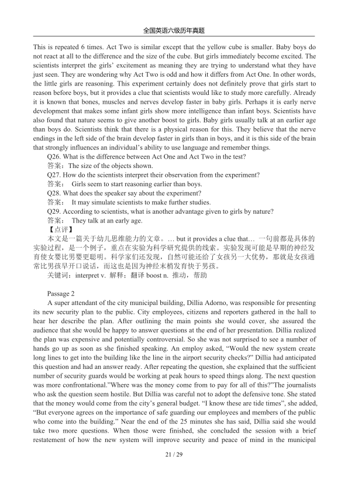
全国英语六级历年真题
21 / 29
This is repeated 6 times. Act Two is similar except that the yellow cube is smaller. Baby boys do
not react at all to the difference and the size of the cube. But girls immediately become excited. The
scientists interpret the girls’ excitement as meaning they are trying to understand what they have
just seen. They are wondering why Act Two is odd and how it differs from Act One. In other words,
the little girls are reasoning. This experiment certainly does not definitely prove that girls start to
reason before boys, but it provides a clue that scientists would like to study more carefully. Already
it is known that bones, muscles and nerves develop faster in baby girls. Perhaps it is early nerve
development that makes some infant girls show more intelligence than infant boys. Scientists have
also found that nature seems to give another boost to girls. Baby girls usually talk at an earlier age
than boys do. Scientists think that there is a physical reason for this. They believe that the nerve
endings in the left side of the brain develop faster in girls than in boys, and it is this side of the brain
that strongly influences an individual’s ability to use language and remember things.
Q26. What is the difference between Act One and Act Two in the test?
答案：The size of the objects shown.
Q27. How do the scientists interpret their observation from the experiment?
答案：Girls seem to start reasoning earlier than boys.
Q28. What does the speaker say about the experiment?
答案：It may simulate scientists to make further studies.
Q29. According to scientists, what is another advantage given to girls by nature?
答案：They talk at an early age.
【点评】
本文是一篇关于幼儿思维能力的文章。… but it provides a clue that… 一句前都是具体的
实验过程，是一个例子，重点在实验为科学研究提供的线索。实验发现可能是早期的神经发
育使女婴比男婴更聪明。科学家们还发现，自然可能还给了女孩另一大优势，那就是女孩通
常比男孩早开口说话，而这也是因为神经末梢发育快于男孩。
关键词：interpret v. 解释；翻译boost n. 推动，帮助
Passage 2
A super attendant of the city municipal building, Dillia Adorno, was responsible for presenting
its new security plan to the public. City employees, citizens and reporters gathered in the hall to
hear her describe the plan. After outlining the main points she would cover, she assured the
audience that she would be happy to answer questions at the end of her presentation. Dillia realized
the plan was expensive and potentially controversial. So she was not surprised to see a number of
hands go up as soon as she finished speaking. An employ asked, “Would the new system create
long lines to get into the building like the line in the airport security checks?” Dillia had anticipated
this question and had an answer ready. After repeating the question, she explained that the sufficient
number of security guards would be working at peak hours to speed things along. The next question
was more confrontational.”Where was the money come from to pay for all of this?”The journalists
who ask the question seem hostile. But Dillia was careful not to adopt the defensive tone. She stated
that the money would come from the city’s general budget. “I know these are tide times”, she added,
“But everyone agrees on the importance of safe guarding our employees and members of the public
who come into the building.” Near the end of the 25 minutes she has said, Dillia said she would
take two more questions. When those were finished, she concluded the session with a brief
restatement of how the new system will improve security and peace of mind in the municipal
查看 / 复制本页文字
全国英语六级历年真题 21 / 29 This is repeated 6 times. Act Two is similar except that the yellow cube is smaller. Baby boys do not react at all to the difference and the size of the cube. But girls immediately become excited. The scientists interpret the girls’ excitement as meaning they are trying to understand what they have just seen. They are wondering why Act Two is odd and how it differs from Act One. In other words, the little girls are reasoning. This experiment certainly does not definitely prove that girls start to reason before boys, but it provides a clue that scientists would like to study more carefully. Already it is known that bones, muscles and nerves develop faster in baby girls. Perhaps it is early nerve development that makes some infant girls show more intelligence than infant boys. Scientists have also found that nature seems to give another boost to girls. Baby girls usually talk at an earlier age than boys do. Scientists think that there is a physical reason for this. They believe that the nerve endings in the left side of the brain develop faster in girls than in boys, and it is this side of the brain that strongly influences an individual’s ability to use language and remember things. Q26. What is the difference between Act One and Act Two in the test? 答案：The size of the objects shown. Q27. How do the scientists interpret their observation from the experiment? 答案：Girls seem to start reasoning earlier than boys. Q28. What does the speaker say about the experiment? 答案：It may simulate scientists to make further studies. Q29. According to scientists, what is another advantage given to girls by nature? 答案：They talk at an early age. 【点评】 本文是一篇关于幼儿思维能力的文章。… but it provides a clue that… 一句前都是具体的 实验过程，是一个例子，重点在实验为科学研究提供的线索。实验发现可能是早期的神经发 育使女婴比男婴更聪明。科学家们还发现，自然可能还给了女孩另一大优势，那就是女孩通 常比男孩早开口说话，而这也是因为神经末梢发育快于男孩。 关键词：interpret v. 解释；翻译boost n. 推动，帮助 Passage 2 A super attendant of the city municipal building, Dillia Adorno, was responsible for presenting its new security plan to the public. City employees, citizens and reporters gathered in the hall to hear her describe the plan. After outlining the main points she would cover, she assured the audience that she would be happy to answer questions at the end of her presentation. Dillia realized the plan was expensive and potentially controversial. So she was not surprised to see a number of hands go up as soon as she finished speaking. An employ asked, “Would the new system create long lines to get into the building like the line in the airport security checks?” Dillia had anticipated this question and had an answer ready. After repeating the question, she explained that the sufficient number of security guards would be working at peak hours to speed things along. The next question was more confrontational.”Where was the money come from to pay for all of this?”The journalists who ask the question seem hostile. But Dillia was careful not to adopt the defensive tone. She stated that the money would come from the city’s general budget. “I know these are tide times”, she added, “But everyone agrees on the importance of safe guarding our employees and members of the public who come into the building.” Near the end of the 25 minutes she has said, Dillia said she would take two more questions. When those were finished, she concluded the session with a brief restatement of how the new system will improve security and peace of mind in the municipal
第 22 / 29 页
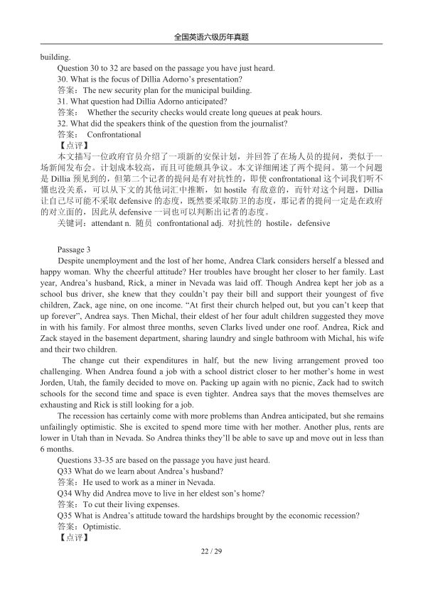
全国英语六级历年真题
22 / 29
building.
Question 30 to 32 are based on the passage you have just heard.
30. What is the focus of Dillia Adorno’s presentation?
答案：The new security plan for the municipal building.
31. What question had Dillia Adorno anticipated?
答案：Whether the security checks would create long queues at peak hours.
32. What did the speakers think of the question from the journalist?
答案：Confrontational
【点评】
本文描写一位政府官员介绍了一项新的安保计划，并回答了在场人员的提问，类似于一
场新闻发布会。计划成本较高，而且可能颇具争议。本文详细阐述了两个提问。第一个问题
是Dillia 预见到的，但第二个记者的提问是有对抗性的，即使confrontational 这个词我们听不
懂也没关系，可以从下文的其他词汇中推断，如hostile 有敌意的，而针对这个问题，Dillia
让自己尽可能不采取defensive 的态度，既然要采取防卫的态度，那记者的提问一定是在政府
的对立面的，因此从defensive 一词也可以判断出记者的态度。
关键词：attendant n. 随员confrontational adj. 对抗性的hostile，defensive
Passage 3
Despite unemployment and the lost of her home, Andrea Clark considers herself a blessed and
happy woman. Why the cheerful attitude? Her troubles have brought her closer to her family. Last
year, Andrea’s husband, Rick, a miner in Nevada was laid off. Though Andrea kept her job as a
school bus driver, she knew that they couldn’t pay their bill and support their youngest of five
children, Zack, age nine, on one income. “At first their church helped out, but you can’t keep that
up forever”, Andrea says. Then Michal, their eldest of her four adult children suggested they move
in with his family. For almost three months, seven Clarks lived under one roof. Andrea, Rick and
Zack stayed in the basement department, sharing laundry and single bathroom with Michal, his wife
and their two children.
The change cut their expenditures in half, but the new living arrangement proved too
challenging. When Andrea found a job with a school district closer to her mother’s home in west
Jorden, Utah, the family decided to move on. Packing up again with no picnic, Zack had to switch
schools for the second time and space is even tighter. Andrea says that the moves themselves are
exhausting and Rick is still looking for a job.
The recession has certainly come with more problems than Andrea anticipated, but she remains
unfailingly optimistic. She is excited to spend more time with her mother. Another plus, rents are
lower in Utah than in Nevada. So Andrea thinks they’ll be able to save up and move out in less than
6 months.
Questions 33-35 are based on the passage you have just heard.
Q33 What do we learn about Andrea’s husband?
答案：He used to work as a miner in Nevada.
Q34 Why did Andrea move to live in her eldest son’s home?
答案：To cut their living expenses.
Q35 What is Andrea’s attitude toward the hardships brought by the economic recession?
答案：Optimistic.
【点评】
查看 / 复制本页文字
全国英语六级历年真题 22 / 29 building. Question 30 to 32 are based on the passage you have just heard. 30. What is the focus of Dillia Adorno’s presentation? 答案：The new security plan for the municipal building. 31. What question had Dillia Adorno anticipated? 答案：Whether the security checks would create long queues at peak hours. 32. What did the speakers think of the question from the journalist? 答案：Confrontational 【点评】 本文描写一位政府官员介绍了一项新的安保计划，并回答了在场人员的提问，类似于一 场新闻发布会。计划成本较高，而且可能颇具争议。本文详细阐述了两个提问。第一个问题 是Dillia 预见到的，但第二个记者的提问是有对抗性的，即使confrontational 这个词我们听不 懂也没关系，可以从下文的其他词汇中推断，如hostile 有敌意的，而针对这个问题，Dillia 让自己尽可能不采取defensive 的态度，既然要采取防卫的态度，那记者的提问一定是在政府 的对立面的，因此从defensive 一词也可以判断出记者的态度。 关键词：attendant n. 随员confrontational adj. 对抗性的hostile，defensive Passage 3 Despite unemployment and the lost of her home, Andrea Clark considers herself a blessed and happy woman. Why the cheerful attitude? Her troubles have brought her closer to her family. Last year, Andrea’s husband, Rick, a miner in Nevada was laid off. Though Andrea kept her job as a school bus driver, she knew that they couldn’t pay their bill and support their youngest of five children, Zack, age nine, on one income. “At first their church helped out, but you can’t keep that up forever”, Andrea says. Then Michal, their eldest of her four adult children suggested they move in with his family. For almost three months, seven Clarks lived under one roof. Andrea, Rick and Zack stayed in the basement department, sharing laundry and single bathroom with Michal, his wife and their two children. The change cut their expenditures in half, but the new living arrangement proved too challenging. When Andrea found a job with a school district closer to her mother’s home in west Jorden, Utah, the family decided to move on. Packing up again with no picnic, Zack had to switch schools for the second time and space is even tighter. Andrea says that the moves themselves are exhausting and Rick is still looking for a job. The recession has certainly come with more problems than Andrea anticipated, but she remains unfailingly optimistic. She is excited to spend more time with her mother. Another plus, rents are lower in Utah than in Nevada. So Andrea thinks they’ll be able to save up and move out in less than 6 months. Questions 33-35 are based on the passage you have just heard. Q33 What do we learn about Andrea’s husband? 答案：He used to work as a miner in Nevada. Q34 Why did Andrea move to live in her eldest son’s home? 答案：To cut their living expenses. Q35 What is Andrea’s attitude toward the hardships brought by the economic recession? 答案：Optimistic. 【点评】
第 23 / 29 页
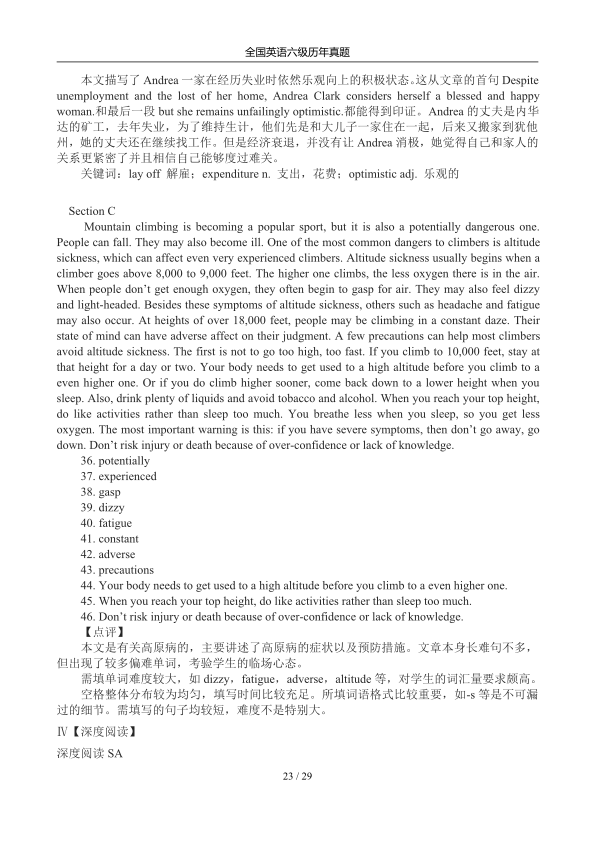
全国英语六级历年真题
23 / 29
本文描写了Andrea 一家在经历失业时依然乐观向上的积极状态。这从文章的首句Despite
unemployment and the lost of her home, Andrea Clark considers herself a blessed and happy
woman.和最后一段but she remains unfailingly optimistic.都能得到印证。Andrea 的丈夫是内华
达的矿工，去年失业，为了维持生计，他们先是和大儿子一家住在一起，后来又搬家到犹他
州，她的丈夫还在继续找工作。但是经济衰退，并没有让Andrea 消极，她觉得自己和家人的
关系更紧密了并且相信自己能够度过难关。
关键词：lay off 解雇；expenditure n. 支出，花费；optimistic adj. 乐观的
Section C
Mountain climbing is becoming a popular sport, but it is also a potentially dangerous one.
People can fall. They may also become ill. One of the most common dangers to climbers is altitude
sickness, which can affect even very experienced climbers. Altitude sickness usually begins when a
climber goes above 8,000 to 9,000 feet. The higher one climbs, the less oxygen there is in the air.
When people don’t get enough oxygen, they often begin to gasp for air. They may also feel dizzy
and light-headed. Besides these symptoms of altitude sickness, others such as headache and fatigue
may also occur. At heights of over 18,000 feet, people may be climbing in a constant daze. Their
state of mind can have adverse affect on their judgment. A few precautions can help most climbers
avoid altitude sickness. The first is not to go too high, too fast. If you climb to 10,000 feet, stay at
that height for a day or two. Your body needs to get used to a high altitude before you climb to a
even higher one. Or if you do climb higher sooner, come back down to a lower height when you
sleep. Also, drink plenty of liquids and avoid tobacco and alcohol. When you reach your top height,
do like activities rather than sleep too much. You breathe less when you sleep, so you get less
oxygen. The most important warning is this: if you have severe symptoms, then don’t go away, go
down. Don’t risk injury or death because of over-confidence or lack of knowledge.
36. potentially
37. experienced
38. gasp
39. dizzy
40. fatigue
41. constant
42. adverse
43. precautions
44. Your body needs to get used to a high altitude before you climb to a even higher one.
45. When you reach your top height, do like activities rather than sleep too much.
46. Don’t risk injury or death because of over-confidence or lack of knowledge.
【点评】
本文是有关高原病的，主要讲述了高原病的症状以及预防措施。文章本身长难句不多，
但出现了较多偏难单词，考验学生的临场心态。
需填单词难度较大，如dizzy，fatigue，adverse，altitude 等，对学生的词汇量要求颇高。
空格整体分布较为均匀，填写时间比较充足。所填词语格式比较重要，如-s 等是不可漏
过的细节。需填写的句子均较短，难度不是特别大。
Ⅳ【深度阅读】
深度阅读SA
查看 / 复制本页文字
全国英语六级历年真题 23 / 29 本文描写了Andrea 一家在经历失业时依然乐观向上的积极状态。这从文章的首句Despite unemployment and the lost of her home, Andrea Clark considers herself a blessed and happy woman.和最后一段but she remains unfailingly optimistic.都能得到印证。Andrea 的丈夫是内华 达的矿工，去年失业，为了维持生计，他们先是和大儿子一家住在一起，后来又搬家到犹他 州，她的丈夫还在继续找工作。但是经济衰退，并没有让Andrea 消极，她觉得自己和家人的 关系更紧密了并且相信自己能够度过难关。 关键词：lay off 解雇；expenditure n. 支出，花费；optimistic adj. 乐观的 Section C Mountain climbing is becoming a popular sport, but it is also a potentially dangerous one. People can fall. They may also become ill. One of the most common dangers to climbers is altitude sickness, which can affect even very experienced climbers. Altitude sickness usually begins when a climber goes above 8,000 to 9,000 feet. The higher one climbs, the less oxygen there is in the air. When people don’t get enough oxygen, they often begin to gasp for air. They may also feel dizzy and light-headed. Besides these symptoms of altitude sickness, others such as headache and fatigue may also occur. At heights of over 18,000 feet, people may be climbing in a constant daze. Their state of mind can have adverse affect on their judgment. A few precautions can help most climbers avoid altitude sickness. The first is not to go too high, too fast. If you climb to 10,000 feet, stay at that height for a day or two. Your body needs to get used to a high altitude before you climb to a even higher one. Or if you do climb higher sooner, come back down to a lower height when you sleep. Also, drink plenty of liquids and avoid tobacco and alcohol. When you reach your top height, do like activities rather than sleep too much. You breathe less when you sleep, so you get less oxygen. The most important warning is this: if you have severe symptoms, then don’t go away, go down. Don’t risk injury or death because of over-confidence or lack of knowledge. 36. potentially 37. experienced 38. gasp 39. dizzy 40. fatigue 41. constant 42. adverse 43. precautions 44. Your body needs to get used to a high altitude before you climb to a even higher one. 45. When you reach your top height, do like activities rather than sleep too much. 46. Don’t risk injury or death because of over-confidence or lack of knowledge. 【点评】 本文是有关高原病的，主要讲述了高原病的症状以及预防措施。文章本身长难句不多， 但出现了较多偏难单词，考验学生的临场心态。 需填单词难度较大，如dizzy，fatigue，adverse，altitude 等，对学生的词汇量要求颇高。 空格整体分布较为均匀，填写时间比较充足。所填词语格式比较重要，如-s 等是不可漏 过的细节。需填写的句子均较短，难度不是特别大。 Ⅳ【深度阅读】 深度阅读SA
第 24 / 29 页
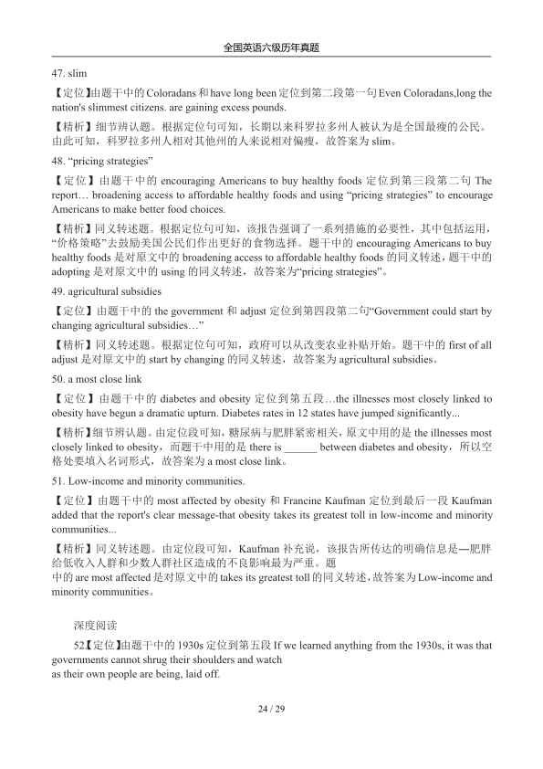
全国英语六级历年真题
24 / 29
47. slim
【定位】由题干中的Coloradans和have long been定位到第二段第一句Even Coloradans,long the
nation's slimmest citizens. are gaining excess pounds.
【精析】细节辨认题。根据定位句可知，长期以来科罗拉多州人被认为是全国最瘦的公民。
由此可知，科罗拉多州人相对其他州的人来说相对偏瘦，故答案为slim。
48. “pricing strategies”
【定位】由题干中的encouraging Americans to buy healthy foods 定位到第三段第二句The
report… broadening access to affordable healthy foods and using “pricing strategies” to encourage
Americans to make better food choices.
【精析】同义转述题。根据定位句可知，该报告强调了一系列措施的必要性，其中包括运用，
“价格策略”去鼓励美国公民们作出更好的食物选择。题干中的encouraging Americans to buy
healthy foods 是对原文中的broadening access to affordable healthy foods 的同义转述，题干中的
adopting 是对原文中的using 的同义转述，故答案为“pricing strategies”。
49. agricultural subsidies
【定位】由题干中的the government 和adjust 定位到第四段第二句“Government could start by
changing agricultural subsidies…”
【精析】同义转述题。根据定位句可知，政府可以从改变农业补贴开始。题干中的first of all
adjust 是对原文中的start by changing 的同义转述，故答案为agricultural subsidies。
50. a most close link
【定位】由题干中的diabetes and obesity 定位到第五段…the illnesses most closely linked to
obesity have begun a dramatic upturn. Diabetes rates in 12 states have jumped significantly...
【精析】细节辨认题。由定位段可知，糖尿病与肥胖紧密相关，原文中用的是the illnesses most
closely linked to obesity，而题干中用的是there is ______ between diabetes and obesity，所以空
格处要填入名词形式，故答案为a most close link。
51. Low-income and minority communities.
【定位】由题干中的most affected by obesity 和Francine Kaufman 定位到最后一段Kaufman
added that the report's clear message-that obesity takes its greatest toll in low-income and minority
communities...
【精析】同义转述题。由定位段可知，Kaufman 补充说，该报告所传达的明确信息是―肥胖
给低收入人群和少数人群社区造成的不良影响最为严重。题
中的are most affected 是对原文中的takes its greatest toll 的同义转述，故答案为Low-income and
minority communities。
深度阅读
52.【定位】由题干中的1930s 定位到第五段If we learned anything from the 1930s, it was that
governments cannot shrug their shoulders and watch
as their own people are being, laid off.
查看 / 复制本页文字
全国英语六级历年真题 24 / 29 47. slim 【定位】由题干中的Coloradans和have long been定位到第二段第一句Even Coloradans,long the nation's slimmest citizens. are gaining excess pounds. 【精析】细节辨认题。根据定位句可知，长期以来科罗拉多州人被认为是全国最瘦的公民。 由此可知，科罗拉多州人相对其他州的人来说相对偏瘦，故答案为slim。 48. “pricing strategies” 【定位】由题干中的encouraging Americans to buy healthy foods 定位到第三段第二句The report… broadening access to affordable healthy foods and using “pricing strategies” to encourage Americans to make better food choices. 【精析】同义转述题。根据定位句可知，该报告强调了一系列措施的必要性，其中包括运用， “价格策略”去鼓励美国公民们作出更好的食物选择。题干中的encouraging Americans to buy healthy foods 是对原文中的broadening access to affordable healthy foods 的同义转述，题干中的 adopting 是对原文中的using 的同义转述，故答案为“pricing strategies”。 49. agricultural subsidies 【定位】由题干中的the government 和adjust 定位到第四段第二句“Government could start by changing agricultural subsidies…” 【精析】同义转述题。根据定位句可知，政府可以从改变农业补贴开始。题干中的first of all adjust 是对原文中的start by changing 的同义转述，故答案为agricultural subsidies。 50. a most close link 【定位】由题干中的diabetes and obesity 定位到第五段…the illnesses most closely linked to obesity have begun a dramatic upturn. Diabetes rates in 12 states have jumped significantly... 【精析】细节辨认题。由定位段可知，糖尿病与肥胖紧密相关，原文中用的是the illnesses most closely linked to obesity，而题干中用的是there is ______ between diabetes and obesity，所以空 格处要填入名词形式，故答案为a most close link。 51. Low-income and minority communities. 【定位】由题干中的most affected by obesity 和Francine Kaufman 定位到最后一段Kaufman added that the report's clear message-that obesity takes its greatest toll in low-income and minority communities... 【精析】同义转述题。由定位段可知，Kaufman 补充说，该报告所传达的明确信息是―肥胖 给低收入人群和少数人群社区造成的不良影响最为严重。题 中的are most affected 是对原文中的takes its greatest toll 的同义转述，故答案为Low-income and minority communities。 深度阅读 52.【定位】由题干中的1930s 定位到第五段If we learned anything from the 1930s, it was that governments cannot shrug their shoulders and watch as their own people are being, laid off.
第 25 / 29 页
全国英语六级历年真题
25 / 29
A) 【精析】推理判断题。定位段提到，如果要说我们能从20 世纪30 年代的世界经济危机中
领悟到什么的话，那就是在人们纷纷失业时，政府不能漠然视之。很多考生会因此误选B)“政
府应给予失业人员补贴”。需要注意的是，定位段中的as 引导的从句使用的是现在进行时，
由此推知，并不是要给予已经失业的人员补贴，而是在面对失业这种情况时，政府应该有所
作为。由此再定位到第四段…those who believe there is a real role for governments in first
reviving our economies, and then setting the right rules for future success，该段提到，有些人认为
政府真正该做的事情，一是振兴经济，二是为未来的成功制定合适的规章制度。作者列举20
世纪30 年代的经济危机，旨在证明上一段的观点，即政府应在振兴经济中有所作为，故A）
为答案。
53.【定位】由题干中的the United States and Britain 定位到第七段Both the United States and
Britain suffered because their economies were overly reliant on the financial sector's artificial
profits…too powerful to challenge.
D) 【精析】细节辨认题。定位段第一个分句提到，英国和美国都遭受了经济危机是因为它们
的经济过于依赖金融机构的虚假利润。D）中的relying heavily on 与原文中overly reliant on
表达的意思相同，故D）为答案。
54.【定位】由题干中的trickle-down promise 定位到倒数第四段第一句We need to recognize that
the trickle-down promise (benefits given to the rich will eventually be passed on to the poor)of
conservative theorists has turned into a gravity-defying reality in which wealth has flowed upward
disproportionately and,too often,undeservedly.
B) 【精析】推理判断题。定位句提到，“涓滴”承诺已使现实失衡，财富分配不均。定位句中
的gravity- defying 意为“违反重力的”，由此可推知，“让一部分人先富起夸最后达到共同富裕”
承诺是不会实现的，故B）为答案。
55.【定位】由题干中的rules, governments should set, economic developmen 定位到倒数第三段
第一句Governments can set better-not necessarily more- rules to encourage productive businesses
that make and sell real products and services.
C) 【精析】推理判断题。定位句提到，政府可通过制定更好的一不必是更多的一政策来鼓励
制造、销售真正的产品和服务的生产性产业，故答案为C)。
56.【定位】由题干中的urrent economy 定位到末段末句The question is not so much whether
20th-century capitalism is failing 21st-century society but whether politics can rise to the challenge
of changing a flawed economic model.
B) 【精析】推理判断题。定位句提到，问题讨论的重点不是20 世纪的资本主义是否适应21
世纪的社会，而是政治是否能接受改变不完善的经济模式这一挑战。B）和原文都出现了
economic model，故为答案。
57.【定位】由题干中的men dominate its executive board 定位到第一段前两句Women are half the
population but only 15% of board members at big American firms, and 10% in Europe. Companies
that fish in only half the talent pool will lose out to those that cast their net more widely.
B) 【精析】推理判断题。文章开篇前两句指出欧美一些大公司的董事会里，女性拥有的席位
很少。而那些只在“人才储备池”的一半中寻找人才的公司会失利于广纳贤才的公司。B）中的
competitiveness will be weakened 与原文中的lose out 表达的意思相同，故为答案。
查看 / 复制本页文字
全国英语六级历年真题 25 / 29 A) 【精析】推理判断题。定位段提到，如果要说我们能从20 世纪30 年代的世界经济危机中 领悟到什么的话，那就是在人们纷纷失业时，政府不能漠然视之。很多考生会因此误选B)“政 府应给予失业人员补贴”。需要注意的是，定位段中的as 引导的从句使用的是现在进行时， 由此推知，并不是要给予已经失业的人员补贴，而是在面对失业这种情况时，政府应该有所 作为。由此再定位到第四段…those who believe there is a real role for governments in first reviving our economies, and then setting the right rules for future success，该段提到，有些人认为 政府真正该做的事情，一是振兴经济，二是为未来的成功制定合适的规章制度。作者列举20 世纪30 年代的经济危机，旨在证明上一段的观点，即政府应在振兴经济中有所作为，故A） 为答案。 53.【定位】由题干中的the United States and Britain 定位到第七段Both the United States and Britain suffered because their economies were overly reliant on the financial sector's artificial profits…too powerful to challenge. D) 【精析】细节辨认题。定位段第一个分句提到，英国和美国都遭受了经济危机是因为它们 的经济过于依赖金融机构的虚假利润。D）中的relying heavily on 与原文中overly reliant on 表达的意思相同，故D）为答案。 54.【定位】由题干中的trickle-down promise 定位到倒数第四段第一句We need to recognize that the trickle-down promise (benefits given to the rich will eventually be passed on to the poor)of conservative theorists has turned into a gravity-defying reality in which wealth has flowed upward disproportionately and,too often,undeservedly. B) 【精析】推理判断题。定位句提到，“涓滴”承诺已使现实失衡，财富分配不均。定位句中 的gravity- defying 意为“违反重力的”，由此可推知，“让一部分人先富起夸最后达到共同富裕” 承诺是不会实现的，故B）为答案。 55.【定位】由题干中的rules, governments should set, economic developmen 定位到倒数第三段 第一句Governments can set better-not necessarily more- rules to encourage productive businesses that make and sell real products and services. C) 【精析】推理判断题。定位句提到，政府可通过制定更好的一不必是更多的一政策来鼓励 制造、销售真正的产品和服务的生产性产业，故答案为C)。 56.【定位】由题干中的urrent economy 定位到末段末句The question is not so much whether 20th-century capitalism is failing 21st-century society but whether politics can rise to the challenge of changing a flawed economic model. B) 【精析】推理判断题。定位句提到，问题讨论的重点不是20 世纪的资本主义是否适应21 世纪的社会，而是政治是否能接受改变不完善的经济模式这一挑战。B）和原文都出现了 economic model，故为答案。 57.【定位】由题干中的men dominate its executive board 定位到第一段前两句Women are half the population but only 15% of board members at big American firms, and 10% in Europe. Companies that fish in only half the talent pool will lose out to those that cast their net more widely. B) 【精析】推理判断题。文章开篇前两句指出欧美一些大公司的董事会里，女性拥有的席位 很少。而那些只在“人才储备池”的一半中寻找人才的公司会失利于广纳贤才的公司。B）中的 competitiveness will be weakened 与原文中的lose out 表达的意思相同，故为答案。
第 26 / 29 页
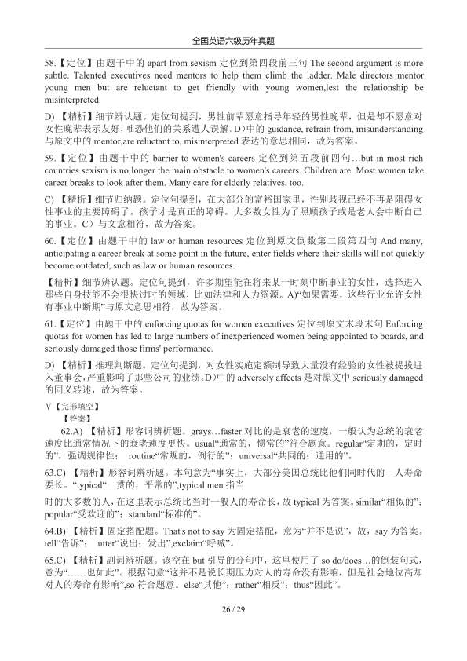
全国英语六级历年真题
26 / 29
58.【定位】由题干中的apart from sexism 定位到第四段前三句The second argument is more
subtle. Talented executives need mentors to help them climb the ladder. Male directors mentor
young men but are reluctant to get friendly with young women,lest the relationship be
misinterpreted.
D) 【精析】细节辨认题。定位句提到，男性前辈愿意指导年轻的男性晚辈，但是却不愿意对
女性晚辈表示友好，唯恐他们的关系遭人误解。D）中的guidance, refrain from, misunderstanding
与原文中的mentor,are reluctant to, misinterpreted 表达的意思相同，故为答案。
59.【定位】由题干中的barrier to women's careers 定位到第五段前四句…but in most rich
countries sexism is no longer the main obstacle to women's careers. Children are. Most women take
career breaks to look after them. Many care for elderly relatives, too.
C) 【精析】细节归纳题。定位句提到，在大部分的富裕国家里，性别歧视已经不再是阻碍女
性事业的主要障碍了。孩子才是真正的障碍。大多数女性为了照顾孩子或是老人会中断自己
的事业。C）与文意相符，故为答案。
60.【定位】由题干中的law or human resources 定位到原文倒数第二段第四句And many,
anticipating a career break at some point in the future, enter fields where their skills will not quickly
become outdated, such as law or human resources.
【精析】细节辨认题。定位句提到，许多期望能在将来某一时刻中断事业的女性，选择进入
那些自身技能不会很快过时的领域，比如法律和人力资源。A)“如果需要，这些行业允许女性
有事业中断期”与原文意思相符，故为答案。
61.【定位】由题干中的enforcing quotas for women executives 定位到原文末段末句Enforcing
quotas for women has led to large numbers of inexperienced women being appointed to boards, and
seriously damaged those firms' performance.
D) 【精析】推理判断题。定位句提到，对女性实施定额制导致大量没有经验的女性被提拔进
入董事会，严重影响了那些公司的业绩。D）中的adversely affects 是对原文中seriously damaged
的同义转述，故为答案。
Ⅴ【完形填空】
【答案】
62.A) 【精析】形容词辨析题。grays…faster 对比的是衰老的速度，一般认为总统的衰老
速度比通常情况下的衰老速度更快。usual“通常的，惯常的”符合题意。regular“定期的，定时
的”，强调规律性；routine“常规的，例行的”；universal“共同的；通用的”。
63.C) 【精析】形容词辨析题。本句意为“事实上，大部分美国总统比他们同时代的＿人寿命
要长。“typical“一贯的，平常的”,typical men 指当
时的大多数的人，在这里表示总统比当时一般人的寿命长，故typical 为答案。similar“相似的”；
popular“受欢迎的”；standard“标准的”。
64.B) 【精析】固定搭配题。That's not to say 为固定搭配，意为“并不是说”，故，say 为答案。
tell“告诉”；utter“说出；发出”,exclaim“呼喊”。
65.C) 【精析】副词辨析题。该空在but 引导的分句中，这里使用了so do/does…的倒装句式，
意为“……也如此”。根据句意“这并不是说长期压力对人的寿命没有影响，但是社会地位高却
对人的寿命有影响”,so 符合题意。else“其他”；rather“相反”；thus“因此”。
查看 / 复制本页文字
全国英语六级历年真题 26 / 29 58.【定位】由题干中的apart from sexism 定位到第四段前三句The second argument is more subtle. Talented executives need mentors to help them climb the ladder. Male directors mentor young men but are reluctant to get friendly with young women,lest the relationship be misinterpreted. D) 【精析】细节辨认题。定位句提到，男性前辈愿意指导年轻的男性晚辈，但是却不愿意对 女性晚辈表示友好，唯恐他们的关系遭人误解。D）中的guidance, refrain from, misunderstanding 与原文中的mentor,are reluctant to, misinterpreted 表达的意思相同，故为答案。 59.【定位】由题干中的barrier to women's careers 定位到第五段前四句…but in most rich countries sexism is no longer the main obstacle to women's careers. Children are. Most women take career breaks to look after them. Many care for elderly relatives, too. C) 【精析】细节归纳题。定位句提到，在大部分的富裕国家里，性别歧视已经不再是阻碍女 性事业的主要障碍了。孩子才是真正的障碍。大多数女性为了照顾孩子或是老人会中断自己 的事业。C）与文意相符，故为答案。 60.【定位】由题干中的law or human resources 定位到原文倒数第二段第四句And many, anticipating a career break at some point in the future, enter fields where their skills will not quickly become outdated, such as law or human resources. 【精析】细节辨认题。定位句提到，许多期望能在将来某一时刻中断事业的女性，选择进入 那些自身技能不会很快过时的领域，比如法律和人力资源。A)“如果需要，这些行业允许女性 有事业中断期”与原文意思相符，故为答案。 61.【定位】由题干中的enforcing quotas for women executives 定位到原文末段末句Enforcing quotas for women has led to large numbers of inexperienced women being appointed to boards, and seriously damaged those firms' performance. D) 【精析】推理判断题。定位句提到，对女性实施定额制导致大量没有经验的女性被提拔进 入董事会，严重影响了那些公司的业绩。D）中的adversely affects 是对原文中seriously damaged 的同义转述，故为答案。 Ⅴ【完形填空】 【答案】 62.A) 【精析】形容词辨析题。grays…faster 对比的是衰老的速度，一般认为总统的衰老 速度比通常情况下的衰老速度更快。usual“通常的，惯常的”符合题意。regular“定期的，定时 的”，强调规律性；routine“常规的，例行的”；universal“共同的；通用的”。 63.C) 【精析】形容词辨析题。本句意为“事实上，大部分美国总统比他们同时代的＿人寿命 要长。“typical“一贯的，平常的”,typical men 指当 时的大多数的人，在这里表示总统比当时一般人的寿命长，故typical 为答案。similar“相似的”； popular“受欢迎的”；standard“标准的”。 64.B) 【精析】固定搭配题。That's not to say 为固定搭配，意为“并不是说”，故，say 为答案。 tell“告诉”；utter“说出；发出”,exclaim“呼喊”。 65.C) 【精析】副词辨析题。该空在but 引导的分句中，这里使用了so do/does…的倒装句式， 意为“……也如此”。根据句意“这并不是说长期压力对人的寿命没有影响，但是社会地位高却 对人的寿命有影响”,so 符合题意。else“其他”；rather“相反”；thus“因此”。
第 27 / 29 页
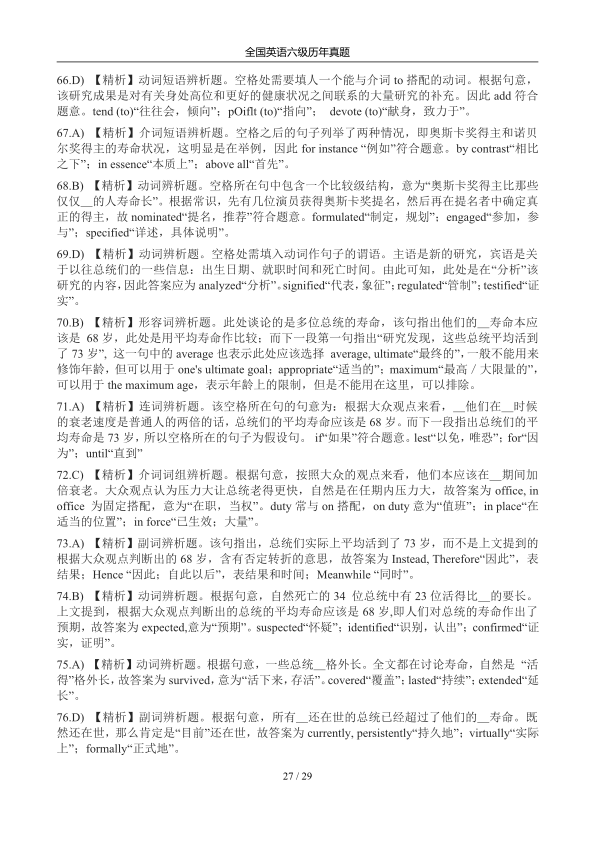
全国英语六级历年真题
27 / 29
66.D) 【精析】动词短语辨析题。空格处需要填人一个能与介词to 搭配的动词。根据句意，
该研究成果是对有关身处高位和更好的健康状况之间联系的大量研究的补充。因此add 符合
题意。tend (to)“往往会，倾向”；pOiflt (to)“指向”；devote (to)“献身，致力于”。
67.A) 【精析】介词短语辨析题。空格之后的句子列举了两种情况，即奥斯卡奖得主和诺贝
尔奖得主的寿命状况，这明显是在举例，因此for instance “例如”符合题意。by contrast“相比
之下”；in essence“本质上”；above all“首先”。
68.B) 【精析】动词辨析题。空格所在句中包含一个比较级结构，意为“奥斯卡奖得主比那些
仅仅＿的人寿命长”。根据常识，先有几位演员获得奥斯卡奖提名，然后再在提名者中确定真
正的得主，故nominated“提名，推荐”符合题意。formulated“制定，规划”；engaged“参加，参
与”；specified“详述，具体说明”。
69.D) 【精析】动词辨析题。空格处需填入动词作句子的谓语。主语是新的研究，宾语是关
于以往总统们的一些信息：出生日期、就职时间和死亡时间。由此可知，此处是在“分析”该
研究的内容，因此答案应为analyzed“分析”。signified“代表，象征”；regulated“管制”；testified“证
实”。
70.B) 【精析】形容词辨析题。此处谈论的是多位总统的寿命，该句指出他们的＿寿命本应
该是68 岁，此处是用平均寿命作比较；而下一段第一句指出“研究发现，这些总统平均活到
了73 岁”, 这一句中的average 也表示此处应该选择average, ultimate“最终的”，一般不能用来
修饰年龄，但可以用于one's ultimate goal；appropriate“适当的”；maximum“最高／大限量的”，
可以用于the maximum age，表示年龄上的限制，但是不能用在这里，可以排除。
71.A) 【精析】连词辨析题。该空格所在句的句意为：根据大众观点来看，＿他们在＿时候
的衰老速度是普通人的两倍的话，总统们的平均寿命应该是68 岁。而下一段指出总统们的平
均寿命是73 岁，所以空格所在的句子为假设句。if“如果”符合题意。lest“以免，唯恐”；for“因
为”；until“直到”
72.C) 【精析】介词词组辨析题。根据句意，按照大众的观点来看，他们本应该在＿期间加
倍衰老。大众观点认为压力大让总统老得更快，自然是在任期内压力大，故答案为office, in
office 为固定搭配，意为“在职，当权”。duty 常与on 搭配，on duty 意为“值班”；in place“在
适当的位置”；in force“已生效；大量”。
73.A) 【精析】副词辨析题。该句指出，总统们实际上平均活到了73 岁，而不是上文提到的
根据大众观点判断出的68 岁，含有否定转折的意思，故答案为Instead, Therefore“因此”，表
结果；Hence “因此；自此以后”，表结果和时间；Meanwhile “同时”。
74.B) 【精析】动词辨析题。根据句意，自然死亡的34 位总统中有23 位活得比＿的要长。
上文提到，根据大众观点判断出的总统的平均寿命应该是68 岁,即人们对总统的寿命作出了
预期，故答案为expected,意为“预期”。suspected“怀疑”；identified“识别，认出”；confirmed“证
实，证明”。
75.A) 【精析】动词辨析题。根据句意，一些总统＿格外长。全文都在讨论寿命，自然是“活
得”格外长，故答案为survived，意为“活下来，存活”。covered“覆盖”；lasted“持续”；extended“延
长”。
76.D) 【精析】副词辨析题。根据句意，所有＿还在世的总统已经超过了他们的＿寿命。既
然还在世，那么肯定是“目前”还在世，故答案为currently, persistently“持久地”；virtually“实际
上”；formally“正式地”。
查看 / 复制本页文字
全国英语六级历年真题 27 / 29 66.D) 【精析】动词短语辨析题。空格处需要填人一个能与介词to 搭配的动词。根据句意， 该研究成果是对有关身处高位和更好的健康状况之间联系的大量研究的补充。因此add 符合 题意。tend (to)“往往会，倾向”；pOiflt (to)“指向”；devote (to)“献身，致力于”。 67.A) 【精析】介词短语辨析题。空格之后的句子列举了两种情况，即奥斯卡奖得主和诺贝 尔奖得主的寿命状况，这明显是在举例，因此for instance “例如”符合题意。by contrast“相比 之下”；in essence“本质上”；above all“首先”。 68.B) 【精析】动词辨析题。空格所在句中包含一个比较级结构，意为“奥斯卡奖得主比那些 仅仅＿的人寿命长”。根据常识，先有几位演员获得奥斯卡奖提名，然后再在提名者中确定真 正的得主，故nominated“提名，推荐”符合题意。formulated“制定，规划”；engaged“参加，参 与”；specified“详述，具体说明”。 69.D) 【精析】动词辨析题。空格处需填入动词作句子的谓语。主语是新的研究，宾语是关 于以往总统们的一些信息：出生日期、就职时间和死亡时间。由此可知，此处是在“分析”该 研究的内容，因此答案应为analyzed“分析”。signified“代表，象征”；regulated“管制”；testified“证 实”。 70.B) 【精析】形容词辨析题。此处谈论的是多位总统的寿命，该句指出他们的＿寿命本应 该是68 岁，此处是用平均寿命作比较；而下一段第一句指出“研究发现，这些总统平均活到 了73 岁”, 这一句中的average 也表示此处应该选择average, ultimate“最终的”，一般不能用来 修饰年龄，但可以用于one's ultimate goal；appropriate“适当的”；maximum“最高／大限量的”， 可以用于the maximum age，表示年龄上的限制，但是不能用在这里，可以排除。 71.A) 【精析】连词辨析题。该空格所在句的句意为：根据大众观点来看，＿他们在＿时候 的衰老速度是普通人的两倍的话，总统们的平均寿命应该是68 岁。而下一段指出总统们的平 均寿命是73 岁，所以空格所在的句子为假设句。if“如果”符合题意。lest“以免，唯恐”；for“因 为”；until“直到” 72.C) 【精析】介词词组辨析题。根据句意，按照大众的观点来看，他们本应该在＿期间加 倍衰老。大众观点认为压力大让总统老得更快，自然是在任期内压力大，故答案为office, in office 为固定搭配，意为“在职，当权”。duty 常与on 搭配，on duty 意为“值班”；in place“在 适当的位置”；in force“已生效；大量”。 73.A) 【精析】副词辨析题。该句指出，总统们实际上平均活到了73 岁，而不是上文提到的 根据大众观点判断出的68 岁，含有否定转折的意思，故答案为Instead, Therefore“因此”，表 结果；Hence “因此；自此以后”，表结果和时间；Meanwhile “同时”。 74.B) 【精析】动词辨析题。根据句意，自然死亡的34 位总统中有23 位活得比＿的要长。 上文提到，根据大众观点判断出的总统的平均寿命应该是68 岁,即人们对总统的寿命作出了 预期，故答案为expected,意为“预期”。suspected“怀疑”；identified“识别，认出”；confirmed“证 实，证明”。 75.A) 【精析】动词辨析题。根据句意，一些总统＿格外长。全文都在讨论寿命，自然是“活 得”格外长，故答案为survived，意为“活下来，存活”。covered“覆盖”；lasted“持续”；extended“延 长”。 76.D) 【精析】副词辨析题。根据句意，所有＿还在世的总统已经超过了他们的＿寿命。既 然还在世，那么肯定是“目前”还在世，故答案为currently, persistently“持久地”；virtually“实际 上”；formally“正式地”。
第 28 / 29 页
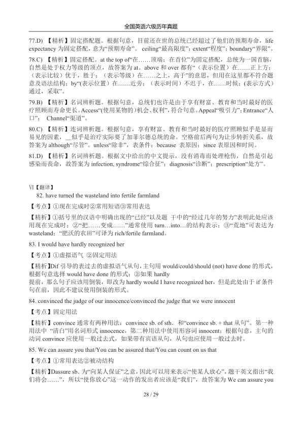
全国英语六级历年真题
28 / 29
77.D) 【精析】固定搭配题。根据句意，目前还在世的总统已经超过了他们的预期寿命，life
expectancy 为固定搭配，意为“预期寿命”。ceiling“最高限度”；extent“程度”；boundary“界限”。
78.C) 【精析】固定搭配。at the top of“在……顶端；在首位”为固定搭配，总统为一国首脑，
自然是处于权力等级的顶点，故答案为at。above 和over 都有“（表示位置）在……正上方；
（表示比较）优于，胜于；（表示等级）在……之上，高于”的意思，但用在这里都不符合题
意及语法结构；by“(表示位置）在……近旁；（表示时间）不迟于，在……时候；(表示方式）
通过，采取”。
79.B) 【精析】名词辨析题。根据句意，总统们也许是由于享有财富、教育和当时最好的医
疗照顾而寿命更长。Access“(使用某物的）机会、权利”，符合句意。Appeal“吸引力”；Entrance“人
口”；Channel“渠道”。
80.C) 【精析】连词辨析题。根据句意，享有财富、教育和当时最好的医疗照顾似乎是显而
易见的因素，＿似乎是治疗实际要了加菲尔德总统的命。空格前后两句为让步转折关系，故
答案为although“尽管”。unless“除非”，表条件；because 表原因；since 表原因和时间。
81.D) 【精析】名词辨析题。根据文中给出的中文提示，没有消毒而处理枪伤，自然是引起
感染而丧命，故答案为infection, syndrome“综合征”；diagnosis“诊断”；prescription“处方”。
Ⅵ【翻译】
82. have turned the wasteland into fertile farmland
【考点】①现在完成时②常用短语③常用表达
【精析】①括号里的汉语中明确出现的“已经”以及题干中的“经过几年的努力”表明此处应该
用现在完成时；②“把……变成……”通常使用turn…into…的结构表示；③“荒地”可表达为
wasteland；“肥沃的农田”可译为rich/fertile farmland。
83. I would have hardly recognized her
【考点】①虚拟语气②固定用法
【精析】Dif 引导的表过去的虚拟语气从句，主句用would/could/should (not) have done 的形式，
根据句意选择would have done 的形式；②如果hardly
提前，那么句子应该用倒装，即改为hardly would I have recognized her，但是此处由于if 条件
句在前，因此不建议使用倒装的形式。
84. convinced the judge of our innocence/convinced the judge that we were innocent
【考点】固定用法
【精析】convince 通常有两种用法：convince sb. of sth．和“convince sb. + that 从句”。第一种
用法中“清白”用名词形式innocence，第二种用法中使用形容词innocent；根据句意，主句的
动词convince 应使用一般过去式，如果带有宾语从句，从句也应使用一般过去时。
85. We can assure you that/You can be assured that/You can count on us that
【考点】①常用表达②被动结构
【精析】Dassure sb．为“向某人保证”之意，因此可以用来表示“使某人放心”，题干英文指出“我
们将会……”，所以“使你放心”这一动作的发出者应该是“我们”，故答案为We can assure you
查看 / 复制本页文字
全国英语六级历年真题 28 / 29 77.D) 【精析】固定搭配题。根据句意，目前还在世的总统已经超过了他们的预期寿命，life expectancy 为固定搭配，意为“预期寿命”。ceiling“最高限度”；extent“程度”；boundary“界限”。 78.C) 【精析】固定搭配。at the top of“在……顶端；在首位”为固定搭配，总统为一国首脑， 自然是处于权力等级的顶点，故答案为at。above 和over 都有“（表示位置）在……正上方； （表示比较）优于，胜于；（表示等级）在……之上，高于”的意思，但用在这里都不符合题 意及语法结构；by“(表示位置）在……近旁；（表示时间）不迟于，在……时候；(表示方式） 通过，采取”。 79.B) 【精析】名词辨析题。根据句意，总统们也许是由于享有财富、教育和当时最好的医 疗照顾而寿命更长。Access“(使用某物的）机会、权利”，符合句意。Appeal“吸引力”；Entrance“人 口”；Channel“渠道”。 80.C) 【精析】连词辨析题。根据句意，享有财富、教育和当时最好的医疗照顾似乎是显而 易见的因素，＿似乎是治疗实际要了加菲尔德总统的命。空格前后两句为让步转折关系，故 答案为although“尽管”。unless“除非”，表条件；because 表原因；since 表原因和时间。 81.D) 【精析】名词辨析题。根据文中给出的中文提示，没有消毒而处理枪伤，自然是引起 感染而丧命，故答案为infection, syndrome“综合征”；diagnosis“诊断”；prescription“处方”。 Ⅵ【翻译】 82. have turned the wasteland into fertile farmland 【考点】①现在完成时②常用短语③常用表达 【精析】①括号里的汉语中明确出现的“已经”以及题干中的“经过几年的努力”表明此处应该 用现在完成时；②“把……变成……”通常使用turn…into…的结构表示；③“荒地”可表达为 wasteland；“肥沃的农田”可译为rich/fertile farmland。 83. I would have hardly recognized her 【考点】①虚拟语气②固定用法 【精析】Dif 引导的表过去的虚拟语气从句，主句用would/could/should (not) have done 的形式， 根据句意选择would have done 的形式；②如果hardly 提前，那么句子应该用倒装，即改为hardly would I have recognized her，但是此处由于if 条件 句在前，因此不建议使用倒装的形式。 84. convinced the judge of our innocence/convinced the judge that we were innocent 【考点】固定用法 【精析】convince 通常有两种用法：convince sb. of sth．和“convince sb. + that 从句”。第一种 用法中“清白”用名词形式innocence，第二种用法中使用形容词innocent；根据句意，主句的 动词convince 应使用一般过去式，如果带有宾语从句，从句也应使用一般过去时。 85. We can assure you that/You can be assured that/You can count on us that 【考点】①常用表达②被动结构 【精析】Dassure sb．为“向某人保证”之意，因此可以用来表示“使某人放心”，题干英文指出“我 们将会……”，所以“使你放心”这一动作的发出者应该是“我们”，故答案为We can assure you
第 29 / 29 页
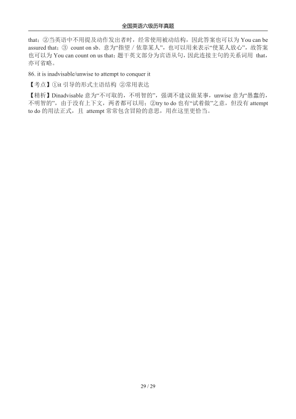
全国英语六级历年真题
29 / 29
that；②当英语中不用提及动作发出者时，经常使用被动结构，因此答案也可以为You can be
assured that；③count on sb．意为“指望／依靠某人”，也可以用来表示“使某人放心”，故答案
也可以为You can count on us that；题干英文部分为宾语从句，因此连接主句的关系词用that，
亦可省略。
86. it is inadvisable/unwise to attempt to conquer it
【考点】①it 引导的形式主语结构②常用表达
【精析】Dinadvisable 意为“不可取的，不明智的”，强调不建议做某事，unwise 意为“愚蠢的，
不明智的”，由于没有上下文，两者都可以用；②try to do 也有“试着做”之意，但没有attempt
to do 的用法正式，且attempt 常常包含冒险的意思，用在这里更恰当。
查看 / 复制本页文字
全国英语六级历年真题 29 / 29 that；②当英语中不用提及动作发出者时，经常使用被动结构，因此答案也可以为You can be assured that；③count on sb．意为“指望／依靠某人”，也可以用来表示“使某人放心”，故答案 也可以为You can count on us that；题干英文部分为宾语从句，因此连接主句的关系词用that， 亦可省略。 86. it is inadvisable/unwise to attempt to conquer it 【考点】①it 引导的形式主语结构②常用表达 【精析】Dinadvisable 意为“不可取的，不明智的”，强调不建议做某事，unwise 意为“愚蠢的， 不明智的”，由于没有上下文，两者都可以用；②try to do 也有“试着做”之意，但没有attempt to do 的用法正式，且attempt 常常包含冒险的意思，用在这里更恰当。